Worklist: the user's five verbatim complaints + red-team sweep 20260806-1
(docs/qa/redteam/run-20260806-1-findings.md, fc10395). Every claim taken was
MEASURED on an instrument before anything was built — the pixel ray-census replays the
solved camera of the exact plate the judge saw and names the mesh under each complained
pixel. Before-images are the closing-bake plates (baked 2026-08-06 ~12:00); after-images
are the live plates (/assets/scenes/del-cine/). Serve repo /public
and /docs on one port to view.
scratchpad/pixel_probe.py,
calibrated on the walk-lantern pixel to the exact mesh): the whole tan "marble floor" across
waterfront's right half IS water_pool-mid (z 0.20 under every probed pixel); the
north-landing "orange rectangle" IS water_pool-downstream; the "hollow gap" was
opaque unlit water in the bank's shadow. Root cause: water_pool-mid and
-downstream were bare 16/8-vertex boxes with no Col colour
attribute — locksfoot_build.py:850 notched the mid pool through
join_meshes after tranche 2 shipped and silently dropped the ratified
depth→alpha bake (water_pool-upstream kept its layer, alpha 0.02–0.97;
t2_water_shader.py:178 records mid at 26,512 baked verts). Fix class: re-run of the SHIPPED recipe, not a new look — t2_water_bed's
four shelves verified present, then t2_water_shader.py -- save: mid 8,648 verts
alpha 0.06–0.97 · downstream 4,290 · lf_lock_water 90; verified in the re-opened
artifact. The restoration is what the user ratified in
docs/plans/water-transparency.md (AS BUILT).


doorway()'s dark
mat_timber_dark slab on a dark wall. Ray-census from each door's OWNING solved
camera: 4/5 door slabs are directly visible — the OCCLUDED verdicts were
shadow-perceptual, so legibility (not camera work) is the right fix class. The cookhouse door
faces south while quay-west shoots from the north — geometrically invisible in that one plate
(its own roof blocks the ray by ~3 m): a camera-ownership note for the seam lane, not a
dressing defect; the south door is the real, walkable entrance.Fix class: tools/door_legibility.py — additive carrier, 62 objects in
DOOR_LEGIBILITY: painted panel in each shop's accent paint, light freshwood
IN-FRAME pilasters (proud side-jambs would clip the built window frames — the armor shop's
window frame overlaps its own door slab), stone threshold at the measured street level, and a
warm glow from the town's own lit-window materials (mat_*_window_a): a transom
where measured headroom allows (cookhouse, 0.69 m), lit panes in the door's upper half under
the pentices elsewhere (0.03–0.48 m headroom). Street levels re-measured in-session and
asserted (drift gate ±0.08). walk_engine_gate GREEN after (0 lost cells of 4,097).


lf_dam_boil — twenty axis-aligned
box prisms in flat dark grey. Fix: tools/boil_dress.py — seeded vertex
jitter (±0.22 m plan, ±0.10 m z) + mat_boil_foam at the water shader's own
foam-lobe tone; the finding-86 surface-straddle contract re-asserted after the edit
(z −4.21..−3.58 over −3.80). With the restored water alpha, the shader's AO foam band now
rings the lumps and the whole group reads as churn (see the north-landing pair above).Worklist: the two Dellhollow residuals named in the 07:55 round-2 close-out
(docs/qa/DAYLOG.md) — the deep-stairs water "flat untextured cyan plane" and the
quay-west "deck sliver". Red-team fix loop: MEASURE the claim on an instrument first. Both
claims turned out to name the wrong object, and the measurements are why. Before-images are
the round-2 plates (before3/); after-images are live.
water_pool-mid. (b) Master census: that sheet HAS the restored bake —
Col present, t2ws set, 8,648 verts, manifest median 4.10 m / ramp
×0.976. All four m_water sheets carry it; none was missed.
(c) Down-ray census of the bed under the camera's whole visible water band (x 38..58,
y 21..31; walk meshes and water hidden): z = −3.90 in 108 of 121 cells — the untouched
riverbed slab, a CONSTANT 4.10 m of depth. (d) The alpha those cells carry,
sampled through the camera: p10 0.641 · p50 0.970 · p90 0.970, 68.1% of the frame's water
pixels at or above 0.95. One flat depth gives one flat alpha. The bake is there; it has
nothing to encode.Fix class: BATHYMETRY, which is what docs/plans/water-transparency.md
calls the deliverable ("the shader is the cheap part"). W2 built three shelves — lockfive,
boatyard, cottage-steps — nominated by t2_probe_shore against the cameras that
existed then; this reach was not one of them. New carrier tools/ds_shelf.py
lays t2w_bed_deep-stairs (496 verts / 450 quads, mat_rock, the
material the bank already wears) over x 36..60 × y 20..32: two incommensurate wave lengths
plus seeded jitter, tapered to the slab at its own border so the weld has no seam, clamped
so it can never come within 0.75 m of the surface (it cannot breach, and cannot foul
wf_skiff_walk at z 0.37) and never sinks below terrain already there
(bed + 0.06, no z-fighting with the bank toe at y 25). Bed depth after:
0.75 / 2.72 / 3.16 / 3.72 / 4.04 m (min/p25/med/p75/max) where it was one number.
Then the SHIPPED recipe re-run — t2_water_shader.py -- save.
| camera | p50 before → after | p90 before → after | % of water pixels ≥ 0.95 |
|---|---|---|---|
| deep-stairs | 0.970 → 0.758 | 0.970 → 0.884 | 68.1% → 0.0% |
| waterfront | 0.970 → 0.970 | 0.970 → 0.970 | 85.2% → 55.8% |
| fishdock | 0.970 → 0.970 | 0.970 → 0.970 | 95.7% → 75.5% |
water_pool-mid's
manifest entry is byte-identical (median 4.10, ramp ×0.976, 8,648 verts, samples 8,196,
alpha 0.065..0.97) — the per-sheet ramp did NOT rescale, which is what proves no other
camera's water moved by side effect. The only other delta town-wide is
water_pool-downstream: 12 of 4,290 vertices, depth_min
0.04→0.02, alpha_min 0.078→0.070 — the bed those 12 rays land on is
lf_dam_boil, which boil_dress jittered AFTER round 1's water
re-bake. Named, not hidden; ≤0.008 of alpha on 0.3% of one sheet.qm_awning_3 / qm_awning_4, material mat_qm_awning.
The round-2 paving ribbon (walk_e_market-stalls__lockhead_l0, the one renderable
walk record in the master) is NOT visible from that camera at all — 0 hits in a 336×192
census. Two structural defects behind the read, both in qm_build.py:
stall() takes the lip from awning_lip()
(walk ground + AWN_CLEAR 2.24 m) and then the ridge as
max(zc + 2.30, lip + 0.26). Wherever headroom drives the lip the second term
wins, so the canvas ships with 0.26 m of fall over 0.98 m of depth — a 15° sheet.
quay-west looks down at ~19°, i.e. within ~4° of the canvas, so it collapses to a ~25 px
strip; being the only sunlit surface in a shadowed pocket, that strip blows out to
near-white. A stripe of canvas seen end-on with nothing lit under it is a floating sliver.qm_awning_0/1/3/4 had 0 of 12 faces pointing up;
only qm_awning_2 (built with the opposite sign on y) and every
shelf_awning_* were correct. awning() appends its quads with one
fixed winding, so the normals follow the sign of (y_out − y_wall). Cycles shades two-sided,
which is why every plate hid it — the realtime tier's backface culling would not have.Fix class: geometry, via a carrier — qm_build.py derives its walls and
stall sites FROM walk records and must not be re-run against the live master.
tools/qm_awning_fix.py raises the RIDGE only, per awning, until the pitch
reaches 0.52 m or the ray-cast finds something 0.12 m above it, and flips the winding.
The lip does not move — it is the headroom contract, and the gate asserts it to 1e-6.
Result: fall 0.26 → 0.52 m (15° → 28.0°) on awnings 0/1/3/4, and 0.26 → 0.30 m (17.1°) on
awning 2, which is capped by qm_notice_board measured above it; 12/12 up-faces
on all five. Headroom under awning 3's lip stays the measured 2.29 m over
qm_paving, against the district's 2.24 m rule and the master's 2.05 m corridor.


fishdock (same material, same shader, judged CONVINCING) is broken by piles, a
skiff and a boat. tools/ds_rocks.py SEARCHES for boulder sites rather than
authoring them — 608 candidates on a 0.5 m grid, each asked in order: is there
≥1.20 m of water under it · is anything that is not terrain within CLEAR · is it inside
the frame · does the camera's ray reach it through the surface. Zero survivors, at
CLEAR = 0.85, 0.60 and 0.40 m (killed: 52 too shallow · 416/389/356 within a prop ·
107/126/145 outside the frame · 33/41/55 behind something). The wharf fills the reach; the
water the camera can see is all under it. The script refuses to place one by hand —
its own assertion says so in as many words — so nothing was built and the master carries no
boulders.tools/blind_pack.mjs over before3/quay-west.jpg and the live plate — the pack itself is not committed because it is two copies of files already in git, and one command rebuilds it), no history, no ownership
framing, zero external spend. Scores: after 7/10, before 5/10. Verbatim on the
BEFORE: "a bright white/pink diagonal streak crossing the plaza floor ... no clear source or
geometric logic — reads as a rendering artifact/glare streak, not a scene element" and
"floating line with no attachment to any geometry". Verbatim on the choice: "img-b carries an
extra bright diagonal streak across the plaza that img-a does not have. That streak is the
kind of thing that instantly reads as broken/unfinished to a player."qm_stall_3's painted board
(mat_qm_paint_blue), measured by the same ray-census. Filed for round 4, not
touched here.tools/scene_redteam.mjs --mode checklist --shots
deep-stairs,quay-west, judge pinned gemini-3.6-flash, 4 calls, 0 errors —
docs/qa/redteam/run-20260807-round3/.Worklist: boil close-read · waterline foam/shore band · boatyard black slabs ·
railings/market-stand close-read · crushed-black street shadows · plus two the evening's judge
named (deep-stairs "no normal ripples, refraction in the shallows", and the "teal-blue flat
panel ... looks like a placeholder plane"). The worklist filed the whole set under the town's
LIGHTING doctrine — adjusting an existing light has never moved this town; ADDING a source
always has. The measurement splits the set in two, and one half is not a lighting
problem at all. Before-images are the round-3 plates (before4/); after-images
are live.
plate_flat audits
background leak, nav_eval asks an LLM, cine_visprobe needs Blender.
tools/plate_probe.py (new, no Blender, no browser) reconstructs a world XYZ
for every pixel out of the bundle's own two files — cine.json's solved camera and
the rgb24-viewz depth.png — and derives a per-pixel normal from the
world-position gradient, which splits the frame into GROUND / WALL / VOID. Three things it is
careful about, each wrong once on the way here: depth is resampled NEAREST only (bg is
2688×1536, depth is 1344×768, and a filtered tap averages the packed bytes of two
different depths); a depth discontinuity fakes a grazing normal, so a sample whose neighbour is
>1.5 m away in world space is dropped rather than classified; and dark is not crushed —
"crushed" means dark AND locally flat (L ≤ 24/255 with a 5×5 sd ≤ 2),
because a dark surface that still carries texture is a shadow and one that carries none is a
hole, and they want different fixes.Col for a vertex-colour-driven one:
boatyard lock_four_dam mat_blackstone n=209 albedo L 0.0085 .. 0.0155 (med 0.0094)
slipway_ramp mat_blackstone n= 8 albedo L 0.0094 .. 0.0096
n-landing lf_crest_bay_* mat_blackstone albedo L 0.0156 .. 0.0258
lockfive lf_barge_* lf_matte albedo L 0.0305
(flat) mat_stone_black_cap albedo L 0.0287
--- versus, on the SAME probe, the plates the judge called "crushed street shadow" ---
quay-west wv_hut_* lf_shingle albedo L 0.150 .. 0.181
wv_hut_* lf_stone albedo L 0.124 .. 0.139
(the street materials themselves, resolved through their node trees, for scale:)
mat_qm_paving / mat_qm_ground / mat_shelf_paving albedo 0.137 .. 0.72
m_wood 0.171 · lf_deck 0.26..0.41 · mat_timber_dark 0.124..0.42
209 of the 279 blackest pixels in the boatyard frame are ONE material at a median albedo of
0.94%. That is a tenth of the darkest thing anyone in this town intended to be dark.lock_four_dam/mat_blackstone at a median albedo of 0.0094.
A 0.94% reflector returns 0.94% of whatever arrives — at the shipped exposure (0.15, AgX) no
lamp that would not also blow out its lit neighbours can bring it to a printable value.
pit_lantern's own header records paying for exactly that mistake once already
("moved the bbox median 5.3 → 4.9/255, i.e. NOT AT ALL"). The doctrine is about light and
this is not a light.tools/dh_albedo_floor.py (new carrier). Raises every
base colour in the measured black family to a FLOOR of 0.055, preserving hue
(c ×= floor / L(c)): the flat mat_stone_black_cap, and the
per-vertex Col of mat_blackstone and lf_matte —
18,660 loops over 65 objects, worst albedo before 0.00837.
MATERIAL-SCOPED, and that is load-bearing: lock_four_dam is a joined mesh
carrying eleven material slots over ONE shared Col layer whose median vertex
luminance is 1.0, because mat_wallwood's loops are white there — a mesh-scoped
lift would have repainted the lockhouse.mat_timber_dark 0.1238, so
locksfoot_build's art direction survives verbatim ("black … its coursing, its wet nappe and its
boil, nothing more") while the surface stops being unrenderable. Idempotent, and the second run
does not rewrite the receipt (a no-op that overwrote the manifest with an empty one was caught
and fixed here — a receipt that lies is worse than no receipt).lf_shingle 0.150–0.181, lf_stone 0.124–0.139,
lf_deck 0.26–0.34 — normal reflectance in deep shade. Those really are
unlit, and the lighting doctrine really does govern them. They are left alone on purpose:
the census that would size that lamp recipe is contaminated by the material bug above
(mat_blackstone / lf_matte are in the top hits of boatyard,
north-landing, lockfive AND crossing). Sizing a lamp against a number that is partly a 0.9%
albedo would be solving for the wrong quantity. The honest order is: fix the albedo, RE-MEASURE
the crushed census on the new plates, then solve the class recipe on the class's median member.
The before table is banked above so the re-measure has something to subtract from.plate_probe water walks the water mask's own distance transform
outward from the shore, in metres, and reads L there. "Knife-sharp" is REFUTED — every
camera shows a 0.5–1.2 m gradient, not an edge:
0-0.15m 0.15-0.3 0.3-0.5 0.5-0.8 0.8-1.2 1.2-2.0 waterfront 104.8 112.2 119.4 123.7 123.9 124.4 fishdock 78.0 88.0 101.1 111.5 108.3 106.1 north-landing 81.7 83.7 85.6 91.8 97.7 101.7 weave 46.3 54.2 59.7 75.9 101.3 101.5 deep-stairs 26.3 40.8 58.9 - - - lockfive 50.6 53.1 54.5 63.1 34.2 24.6"No contact band" is CONFIRMED, and the sign is the finding: the shore is monotonically DARKER than open water at every camera. That is the depth-alpha ramp working — shallow water is transparent and what it reveals is unlit bed — and it means there is zero positive contact signal anywhere in town: no band brighter than open water within 0.15 m of any shore, at any plate. A foam ribbon is therefore a new asset across 7+ plates and a round of its own; it is specified here, not built.
water-transparency.md
delivered DEPTH (per-vertex alpha off bed depth) and never delivered SURFACE.lf_dam_boil on north-landing: 703 × 146 px, 1.91% of the
frame, at 30.4 m; L p50 114.8 / p95 214.8, sd 40.1; 47.1% of its pixels are locally flat
(5×5 sd ≤ 2); up-facing 94.7%. And mat_boil_foam is a flat
(0.55, 0.60, 0.62) — one constant, no texture, no vertex colour. So "untextured" is not a
perception, it is the material definition; every bit of variation in those pixels is shading.
boil_dress (round 1) fixed the SILHOUETTE (seeded jitter) and set the TONE, and
those held — what it never gave the boil is surface variation. Named with its number; a
Col break-up on mat_boil_foam is one carrier and a 4-plate rebake,
which did not fit this window's bake budget.qm_stall_3's backboard on quay-west: 179 × 138 px at
29.4 m, L p50 82.5, local 5×5 sd p50 6.68 (only 18.2% flat), mat_qm_paint_blue
= derive(mat_wallwood, scale 2.40, tint 0.17/0.34/0.52). So "flat, unshaded, no
material texture" is not what the pixels say — the board carries mat_wallwood's plank
texture and reads olive-teal (RGB 76.7/80.6/61.3), not flat blue.
stall() puts the
backboard sb at cy − sgn·(hy − 0.20), 0.10 m thick, while the
four posts stand at ±(hy − 0.12), 0.11 m thick. Worked through: the board
spans hy−0.25 .. hy−0.15 and the posts span hy−0.175 ..
hy−0.065 — they overlap by only 0.025 m and the board stands 0.085 m proud of them
on the plaza side. So the 1.30 m panel shows the plaza an unbroken painted face with its own
frame buried behind it, and by eye (crop above) nothing in the frame reads as holding it up.
A board whose frame is behind it reads as a panel dropped on the deck — which is exactly
what the judge wrote. The fix is one line of geometry (seat the board ON the posts, or give it a
visible ledger); specified, not built, because it needs its own carrier and rebake.git HEAD, not re-measured off a downscaled gallery jpg, and
plate_probe takes a PLATE_BUNDLE override so one instrument reads
both bundles.shot | L<=8 % | L<=4 % | frame L p05 boatyard | 7.04 -> 6.64 | 4.84 -> 4.42 | 4.3 -> 5.1 lockfive | 26.04 -> 22.06 | 13.01 -> 10.05 | 1.6 -> 1.8 north-landing | 8.32 -> 6.55 | 5.89 -> 4.55 | 3.1 -> 4.9 crossing | 17.33 -> 14.92 | 8.35 -> 6.39 | 2.5 -> 3.1 weave | 22.67 -> 21.73 | 10.78 -> 10.01 | 1.8 -> 2.1 cottage | 16.37 -> 15.87 | 9.56 -> 9.24 | 1.4 -> 1.4 waterfront | 5.52 -> 5.38 | 2.52 -> 2.44 | 7.3 -> 7.5 lockhead | 11.48 -> 11.44 | 5.49 -> 5.46 | 3.7 -> 3.7 fishdock | 22.34 -> 22.21 | 12.17 -> 12.01 | 1.6 -> 1.6 gate | 6.60 -> 6.25 | 1.39 -> 1.03 | 6.9 -> 7.3
git status after the rebakes: depth.png is
BYTE-IDENTICAL on every plate that had been baked against the current geometry
(8 of the 10 — only their bg.png moved). Depth is
geometry; if a single vertex had moved, those files would differ. That is a stronger
statement than reading dh_albedo_floor and observing that it writes nothing but
colour-attribute values and one Base Color socket, and it is why walk_engine_gate
and findability are not implicated by this round: no walk cell, no body box and no
camera solve can have moved.ds_shelf's bathymetry and qm_awning_fix's ridge.
They are current with the master for the first time since round 1.scene_redteam --town dellhollow --mode both --shots boatyard,
judge pinned gemini-3.6-flash, N=3 naive looks + checklist, 6 calls, 0 errors —
docs/qa/redteam/run-20260807-183447/. The judge gets no history and no ownership
framing, so the comparison is against run-20260806-1's replies on the same camera.pitch-black, black void, untextured,
unlit and even void occur zero times. The six surviving findings
are about entirely different objects — bunting that terminates mid-air, scaffold beams without
vertical supports, no visible stairs onto the circular deck, the boat hull clipping its
scaffolding, foliage embedded in rock without stems. [QUALITY] frame-edge-world CONVINCING ·
water-read CONVINCING ("realistic teal coloring, subtle surface ripples, transparency in the
shallows, and clean contact boundaries").cine_test 635/1 — the 1 is the PRE-ATTRIBUTED
deep-stairs↔waterfront seam red (MORNING.md 20:20; same
{"fired":0,"expected":10} signature it had before this round and after rounds 1
and 3.2/3.3) · slice_test 776/0 · findability_test 69/0 (12 warnings,
unchanged). walk_engine_gate and the walk cycle are not implicated and the
artifact says so: 0 POSITION and 0 index accessors differ in the re-exported GLB.fx_haze_east
(mat_haze_east) is the single most-hit object in the crushed sample on lockfive
(42 of 220) and weave (54 of 220), with fx_haze_south on quay-west.
Neither material carries a Principled BSDF at all — the albedo resolver walks the tree
and comes back with nothing — so the "far cliff wall ends abruptly against a flat gray plane"
(gate, frame-edge WEAK) and lockfive's "flat, featureless dark void" are very likely the same
object seen from three cameras. Not measured further and not touched: it needs its own census
of what those cards actually shade to, and it is a frame-edge item, not a floor one.Left: before4/ (the round-3 item-2/3 bake). Right: live.


Round 3 handed this over as round 4's top item. The measurement refutes all
three of its claims, and the object under the complaint is a different one. Red-team fix
loop, measure-first. Before-images are extracted from git HEAD (not re-measured
off a gallery jpg); both sides are read by ONE instrument through PLATE_BUNDLE.
fx_haze_east / mat_haze_east is the most-hit object
in the crushed sample on lockfive (42 of 220) and weave (54 of 220); fx_haze_south
on quay-west. Neither material carries a Principled BSDF at all … plausibly ONE object
behind three separate frame-edge complaints.mat_haze_east is a two-node Volume Scatter
(0.48/0.50/0.60, anisotropy 0.3) with no surface shader — and so are mat_haze_far,
_mid, _rim, _south and mat_spray. An albedo
resolver that walks the tree looking for a surface BSDF returns nothing on all six. It
found its own blind spot, not a broken material.tools/dh_pixel_census.py. It models the BEAUTY
pass rather than the ray-caster's world: objects with hide_render are dropped, and
a render-only volume card (a material with a Volume link and no Surface link) is
MARCHED THROUGH, accumulating tau = density × path, until the ray lands on
something that actually shades. Both halves are failures this repo has already written down —
"a first-hit tally that does not drop hide_render objects is a lie about the frame"
and "VOLUME CARDS ARE MESHES TO A RAY-CASTER".
plate largest crushed region FIRST OPAQUE HIT (marched) fx_haze_east tau
lockfive 5.97% of frame @ 89 m cliff_east_closure | mat_rock_gorgewall 83.2% 0.0555..0.0587
water_pool-downstream | m_water 12.2%
weave 6.86% of frame @ 102 m cliff_east_closure | mat_rock_gorgewall 96.0% 0.0564..0.0596
gate (r2) 0.93% of frame @ 160 m cliff_east_closure | mat_rock_gorgewall 91.8% 0.0554..0.0561
crossing 11.40% of frame @ 72 m water_pool-downstream | m_water 76.2% (8% of rays)
cliff_far_toe | mat_rock_farwall 14.5%
gate (r1) 1.51% of frame @ 135 m water_pool-downstream | m_water 99.2% (0.2% of rays)
The card's own optical depth over those same rays is tau 0.055–0.060 — a 5.4% wash.
It was standing in front of the answer. Stage 1 (world position reconstructed from
depth.png) and stage 2 (the cast) agree to 0.03–0.29 m mean: two
independent instruments, and the bake's depth pass already deletes every haze object, so the
depth map was never fooled.fx_haze_south on quay-west is refuted outrightqm_stair_underworks | mat_qm_stone_dark 62.8% + seam_bank |
mat_rock 26.0%, and ZERO rays through it cross any haze card.
fx_haze_south is untouched by this round.cliff_east_closure is 6,020 m² of wall (2,205 verts,
x 140.5..154.1, y −13..85.5, z −16..32.5, mean world normal −0.994/−0.002/0.113 — it faces the
town) at 92–170 m, wearing mat_rock_gorgewall at a 16.7 m texture
period. It reads L p50 9.8 (weave) to 52.6 (gate) while the town 20 m from the lens
reads 23–73. The most distant surface in Dellhollow is also its darkest, which inverts
the depth cue.
KEY_gorgewall already exists — a 3 W sun at
N·L +0.842 dedicated to this very wall — and the gate lane already probed and
REJECTED raising it, because at 3 W it prints the 16.7 m texture period as a quilt across a
98 m wall. More light makes a tiling artefact legible; more haze hides it AND lifts the
black. That is why the haze is the correct lever and not merely the available one.
tools/dh_haze_east_depth.py makes mat_haze_east's density a
world-Z ramp: 0.102 at the gorge floor falling to 0.027 at the rim (×11.1 / ×2.9),
which is both what valley haze does and what keeps the wash from reading as one flat card.depth.png reconstructs to world x ≥ 138 — exactly cliff_east_closure):
variant lockfive wall p05/p50/p95 gate wall p05/p95 REST p50 shipped 0.009167 7.3 / 38.3 / 60.3 11.3 / 105.6 24.8 / 76.2 uniform 0.060 18.7 / 38.3 / 54.6 22.8 / 184.6 24.9 / 76.2 uniform 0.110 23.1 / 36.8 / 49.7 27.1 / 202.2 24.7 / 76.2 ramp 0.068 -> 0.018 17.4 / 38.5 / 55.6 20.0 / 151.2 24.7 / 76.2 ramp 0.102 -> 0.027 <-- 20.7 / 37.9 / 53.3 23.1 / 168.0 24.7 / 76.2The shipped ramp dominates uniform 0.060 at equal cost: more black lifted (lockfive p05 20.7 vs 18.7) and less forward-scatter blowout where the sun rakes through the card toward the gate camera (p95 168.0 vs 184.6). Uniform 0.110 lifts more and was REFUSED BY EYE — it dissolves the wall into a featureless bank, trading one of the judge's words for the other.
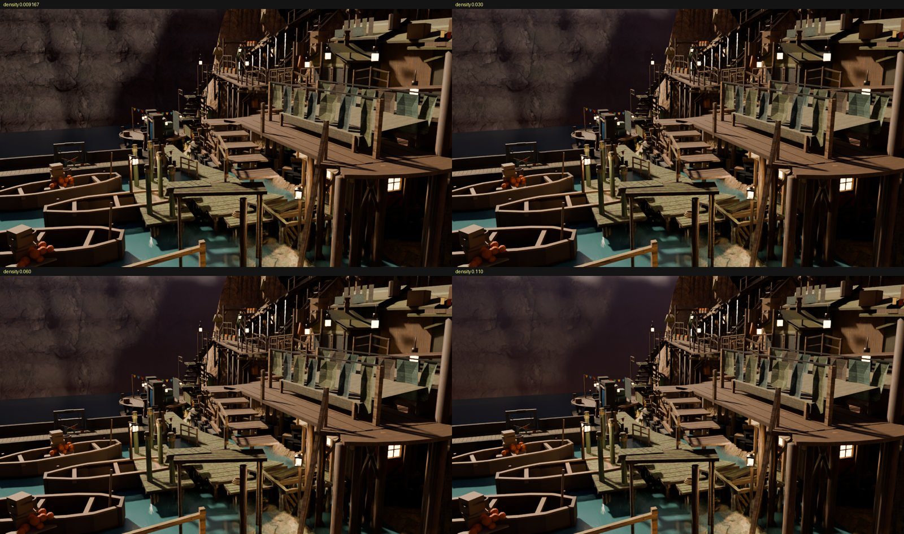
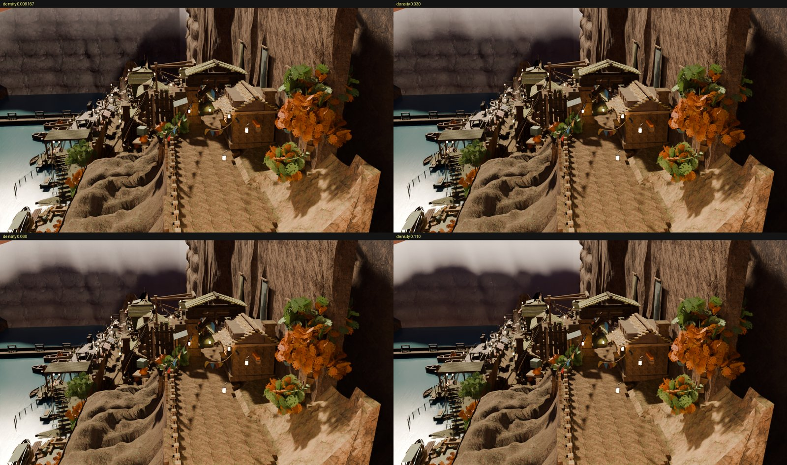
tau (density × thinnest span):
mat_haze_rim density 0.01350 tau 0.5940 wash 44.8% mat_haze_far density 0.00800 tau 0.1920 wash 17.5% mat_haze_mid density 0.00340 tau 0.0816 wash 7.8% mat_haze_south density 0.02778 tau 0.0750 wash 7.2% mat_spray density 0.01100 tau 0.0396 wash 3.9% mat_haze_east density 0.10200 tau 0.6120 wash 45.8% <- this card, at its densest rung
fx_haze_south at 0.0278 was three times the east card's old density and
delivered a thinner wash. That is how the east card sat mid-table on density while
delivering a tenth of its siblings' effect.dh_pixel_census frustum casts 128×72 per camera and splits the rays crossing
the card into BEHIND (they land on the far wall / far water — the intended effect) and SPILL
(they land on anything else, where the wash would print the card's silhouette over a near
object):
camera card% behind% spill% spill objects lockfive 20.55 20.55 0.00 — gate 16.13 16.08 0.05 world background x5 crossing 14.85 14.77 0.09 cliff_town_d x8 weave 8.13 7.99 0.14 cliff_town_d x11, lf_riverbed_tail x2 the other 11 cameras 0.00 0.00 0 of 9,216 rays cross the cardSpill is 0.00–0.14% of frame. The rebake list is exactly those four plates; the other eleven are REFUSED WITH A NUMBER, not skipped.
shot wall% wall L p05 wall p50 wall 5x5sd wall crushed% REST p50 frame L<=8% lockfive 20.5 6.9 -> 20.6 37.5 -> 37.6 2.69->1.59 26.6 -> 18.3 23.5 -> 23.2 22.82 -> 20.74 weave 7.8 5.7 -> 20.0 9.8 -> 23.1 0.80->0.53 86.6 -> 59.5 46.0 -> 46.1 21.74 -> 19.32 crossing 14.1 9.1 -> 21.9 44.4 -> 39.7 3.31->1.64 9.1 -> 6.0 38.9 -> 39.0 15.55 -> 14.61 gate 15.9 10.8 -> 22.9 52.6 -> 49.2 3.03->1.74 6.9 -> 3.7 72.9 -> 72.9 6.42 -> 6.10REST p50 moves by at most 0.3/255 on every plate — the change is confined to the subject at full res, exactly as the spill census predicted.
depth.png is
BYTE-IDENTICAL against git HEAD on all four plates. cine_bake deletes every haze
object before the depth pass, so this could not have moved a walk cell, a body box or a camera
solve — which is why walk_engine_gate is not implicated and town_export
is not owed. No geometry changed at all.
scene_redteam --mode both, pinned gemini-3.6-flash, 24 calls, 0 errors,
run-20260808-round4haze; before = run-20260806-1 (naive) +
run-20260806-2 (checklist), no ownership framing.
run-20260806-1 filed it twice before this round.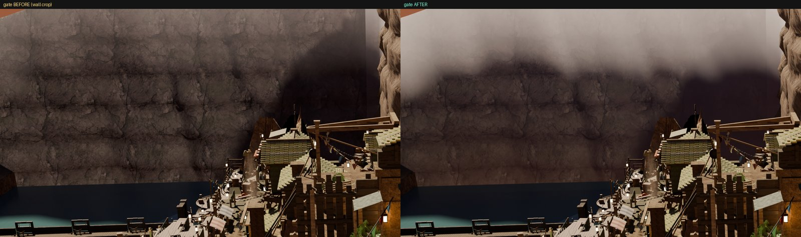
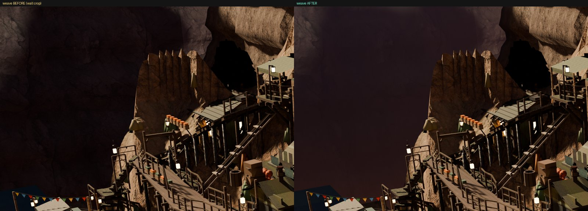
dh_pixel_census's marcher: cliff_east_closure 47.6% meets
cliff_town_a / cliff_town_d 19.4% across that boundary. Those
are the south town wall, x 58..135, top clamped perfectly flat at z = 37.0, and
cliff_east_closure begins at x = 140.5 — a 5.5 m gap in plan and a
dead-straight silhouette, which is exactly the "perfectly straight vertical line" the judge
names. It was always there; a black backdrop was hiding it and a bright one is not.
A defect you can see beats one a void was concealing. Not fixed here.mat_rock_gorgewall's 16.7 m
texture period repeating six times across a 98 m wall — the exact artefact that made the gate
lane refuse to light this surface. Weave is also still the darkest of the four after the fix
(wall p50 23.1 against 37.6 / 39.7 / 49.2), so if any plate wants a second rung it is that one.cine_test 635 ok / 1 failed — the PRE-ATTRIBUTED
deep-stairs↔waterfront seam red, same {"fired":0,"expected":10} signature, i.e.
the Dellhollow baseline exactly · slice_test 776/0 ·
findability_test 69/0, 11 warnings — and findability reads
depth.png and never bg.png (grep: 0 occurrences), so the 12→11
delta against the round-3 note is not attributable to this change ·
routes_derive --check clean, 15 shots. walk_engine_gate not
implicated — byte-identical depth.Left: before5/ (extracted from git HEAD). Right: live.
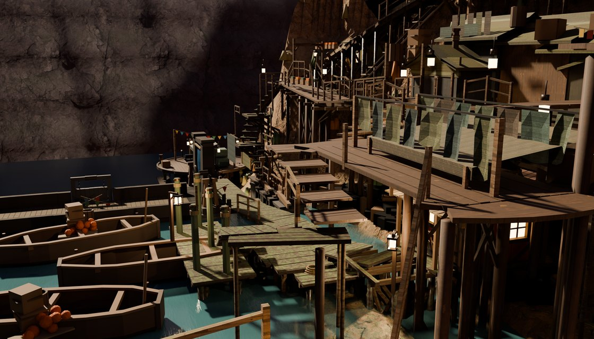
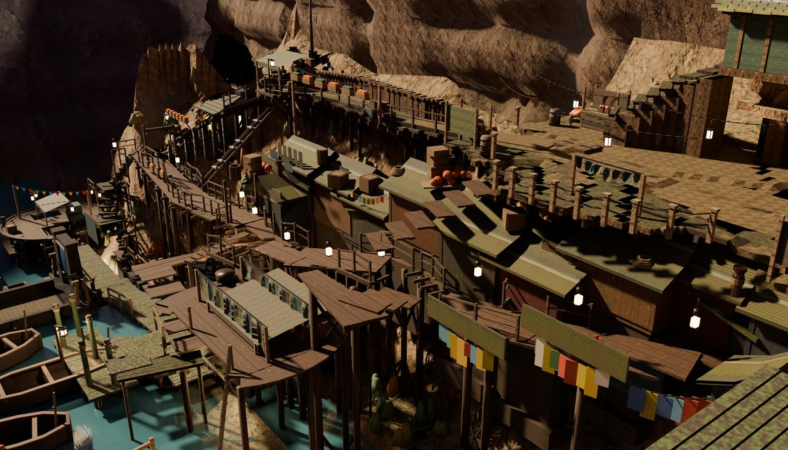
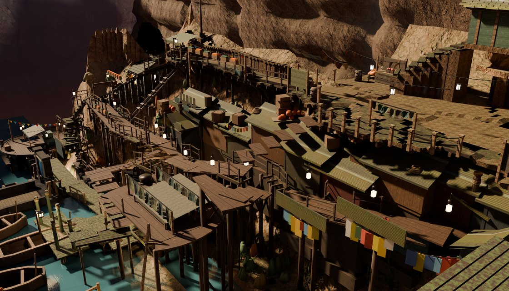
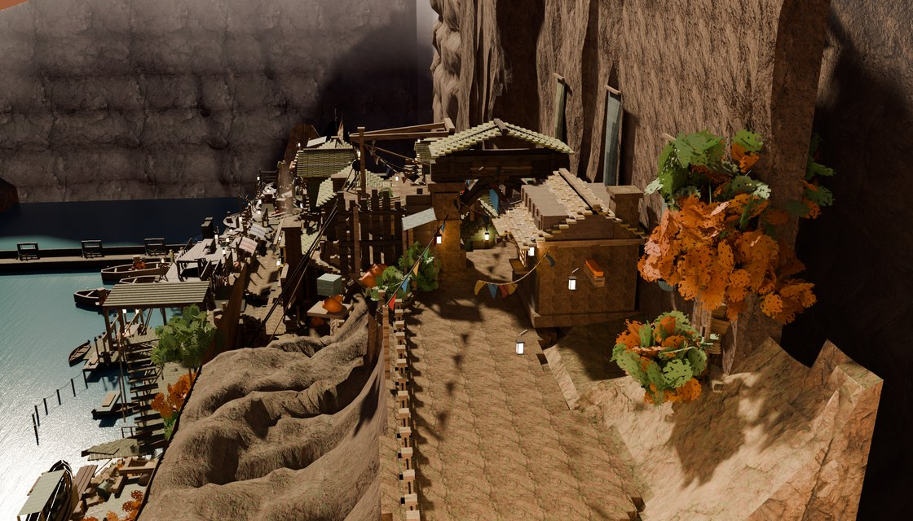
Round 4 named one item for round 5. All three of its claims are refuted, the judge's own bbox is reproduced to three decimals by a new seam census, and the two things this round REFUSED are worth more than the thing it built. Commits a65012db · af8aee81 · 24d6315d.
cliff_town_a / cliff_town_d, the south town wall,
x 58..135, top clamped perfectly flat at z = 37.0, ending 5.5 m short of
cliff_east_closure at x = 140.5. A dead-straight silhouette against the sky.Z1. It is also invisible. A marched ray census of
all FIFTEEN solved cameras (grid 200×112, through dh_pixel_census's own
marcher so hide_render objects are dropped and volume cards are passed through)
finds ZERO columns in which any cliff_town_* patch is silhouetted against
the world background, on any camera — and the background owns 0.00–0.03% of every frame.
Dellhollow is a closed gorge. The builder's own docstring had already said so ("no solved
camera stands above z = 36.5 and every one looks down") and the claim stands; the
handover inherited a plan-view fact as a picture fact.naive_0 | bbox u 0.466..0.478, v 0.00..0.24 | "A sharp vertical seam cuts straight through the cliff mesh where terrain assets meet." |
naive_1 | bbox u 0.460..0.480, v 0.00..0.25 | "The cliff geometry cuts off abruptly in a straight vertical line, exposing the background void." |
naive_2 | bbox u 0.472..0.478, v 0.00..0.25 | "…abruptly terminates in a sharp vertical edge against the background mountain." |
cliff_town_* patch is horizontally adjacent to
cliff_east_closure, grid 240×135, all fifteen cameras. The seam exists on
exactly three plates:
| camera | seam px | u span | line-fit residual | world, wall side |
| gate | 32 | 0.465..0.477 | 6.5 px | x 103.9..134.1 y −2.5..−0.35 z 9.3..30.0 122–153 m |
| weave | 16 | 0.256..0.265 | 7.9 px | x 133.7..135.0 105–107 m |
| crossing | 2 | 0.994 | — | x 134.4..134.9 79 m |
| the other twelve cameras: 0 seam pixels | ||||
Y_FRONT, the builder's front clamp, which flattens every
crest that reaches it into ONE PLANE: measured 574 of tier a's 2,200 vertices (26.1%),
19.5% inside the seam's own z band. It is the wall's forward crests seen at grazing incidence
against a wall 4 m behind them.fx_haze_east is a
card at x 124..130: rays to the closure cross it, rays to cliff_town_a (which ends
at x = 112) never do.
| band | closure side L | town-wall side L | |step| |
| v 0.10..0.20 | 31.2 → 62.4 | 106.1 → 106.5 | 74.9 → 44.1 |
| v 0.00..0.10 | 117.0 → 163.5 | 92.5 → 92.5 | 24.5 → 71.0 |
0.35 + sqrt((d−0.35)² + F²), F = 0.80 swept against
the mesh's own 1.00 m column spacing. Flat vertices 574 → 0; the formerly-flat
crests gain 0.506 m of relief. The gate seam did not move: 32 seam pixels,
u 0.465..0.477, residual 6.5 → 7.0 px.
mat_rock_townwall is object-xy
mapped and runs as long vertical fibres; the horizontal crosscut in the GEOMETRY is what breaks
them). Draft-baked: lockhead 16.95% and loop-stairs 15.08% of frame changed, and
both came back as a face of hanging vertical strands.t2_cliff_south.derive_material() set
mat_rock_townwall's Mapping rotation to 90° and scale to 1.05 on every run.
The shipped material carries rotation 0, scale 0.55 — put there by
tools/t3_rock_projection.py, which had already MEASURED that exact rotation as the
cause of the judge's "severe vertical texture stretching" on loop-stairs, lockhead and
cottage and shipped four probe renders to prove it.
Mapping LEFT AS FOUND: rotation (0.0, 0.0, 0.0) scale (0.55, …).
With that, the same build's delta falls lockhead 15.299% → 0.004% and
loop-stairs 13.490% → 0.009%.cine_bake --draft --res 1008x576 --samples 28 is 15 s a
frame, so all fifteen cameras cost four minutes. Two independent draft renders of the SAME
master differ by 0.01% of frame above 4/255 and 0.00% above 12/255 — denoised Cycles is
effectively deterministic — so that is a real noise floor and every number below is signal. A
rebake list derived from rendered frames beats one derived from a frustum: the frustum said the
wall was 24% of lockhead, and the picture said the change there was zero.X1 was 135.0,
inherited from the 8-vertex placeholder cube (loc x 50, scale x 85) and never reconciled with
cliff_east_closure, which t2_cliff_east.py starts at x = 140.5 and
tops at z = 32.48. The town's two enclosing walls were 5.5 m apart in plan and 4.5 m apart
in height, and the south wall ended in mid-air. X1 = 141.5 puts its last metre
inside the closure's own face.
Y_FRONT plus the buttress's own
reach is the DESIGNED one, and the clearance ray-cast — now reaching past
FRONT_FREE = 4.20 instead of stopping at y = +0.4 — is the MEASURED one. Nothing
stands between the wall and y = +2.4 over x 65..145 (the town's own ground starts there), which
is why there is room for mass at that corner and why it was measured before anything was built.cliff_town_* mesh, re-run the UNCHANGED builder dry,
digest again: west, a and d differ — 42 of 5,960 vertices, max exactly 0.3000 m, all of
it the clearance ray-cast, which is a function of town geometry that has moved since the wall
was last built. The generator is faithful to within its own measured bound and is not a
pure function. Worth knowing before re-running one against a live master — see Refused #2 for
what happens when you do not check.| rebaked | >4/255 | >12/255 | refused with a number | >4/255 |
| weave | 4.959% | 1.273% | loop-stairs | 0.009% |
| cottage | 3.616% | 2.899% | north-landing | 0.007% |
| lockfive | 2.610% | 0.003% | shelf-west / boatyard | 0.006% |
| gate | 1.592% | 0.413% | waterfront | 0.005% |
| crossing | 0.571% | 0.438% | lockhead / shelf-east | 0.004% |
| quay-west | 0.003% | |||
| deep-stairs / fishdock | 0.001% |
cliff_town_a/_d
are in both del-cine/scene.glb and townwalk/scene.glb, and
tools/town_export.py was re-run in the same window. Nothing walkable moved — the
buttresses stand in empty air.cine_test 635 ok / 1 failed / 2 soft warnings — the
PRE-ATTRIBUTED deep-stairs↔waterfront seam red, same
{"fired":0,"expected":10} signature, i.e. the Dellhollow baseline exactly (and the
bundle parity that would have caught a stale export is inside those 635) ·
slice_test 776/0 · findability_test 69/0, 11
warnings · routes_derive --check clean, 15 shots. Both collision bundles
re-exported in the same window (cine_bake --glb and town_export.py,
walk=275 both sides). Leak check: the sky census on the shipped master reads world
background 0.03% at gate and 0.00% at all fourteen others — bit-for-bit the pre-change
figures, so extending the wall past its own skirt (cliff_town_skirt stops at
x = 137) opened nothing.scene_redteam --calibrate (whole town, both modes, n = 3,
pinned gemini-3.6-flash, 71 calls, 0 errors, run-20260808-170205-calib) against
round 4's own run-20260808-round4haze.
Left: before6/ (extracted from git HEAD, i.e. the round-4 plates). Right: live.
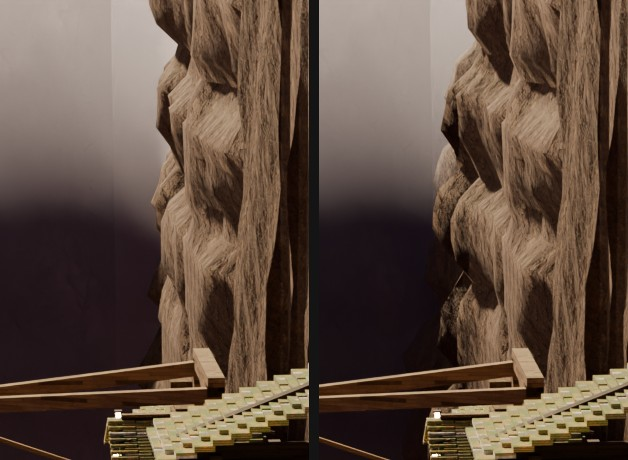
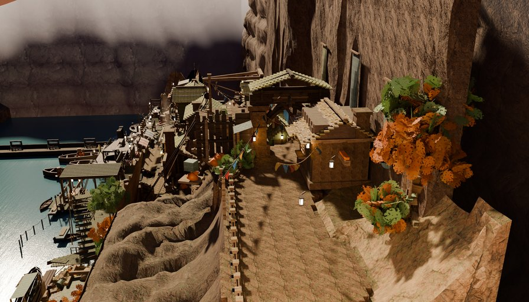
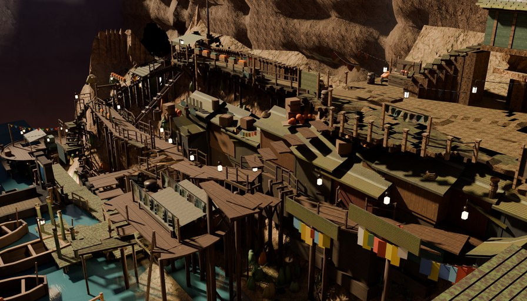
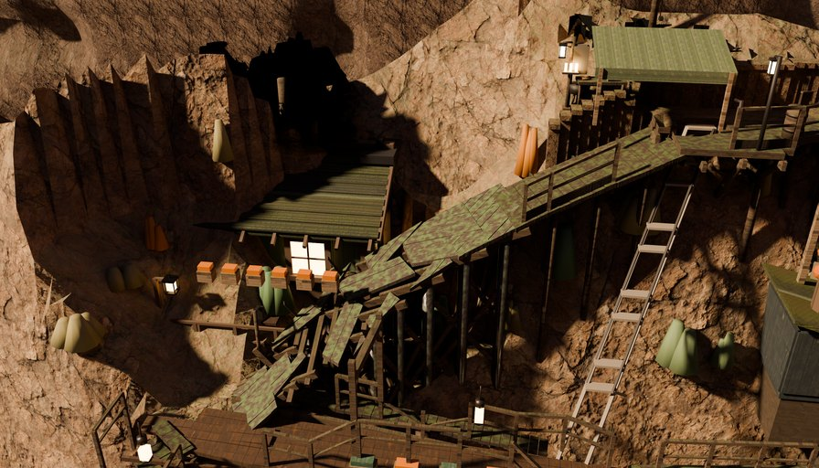
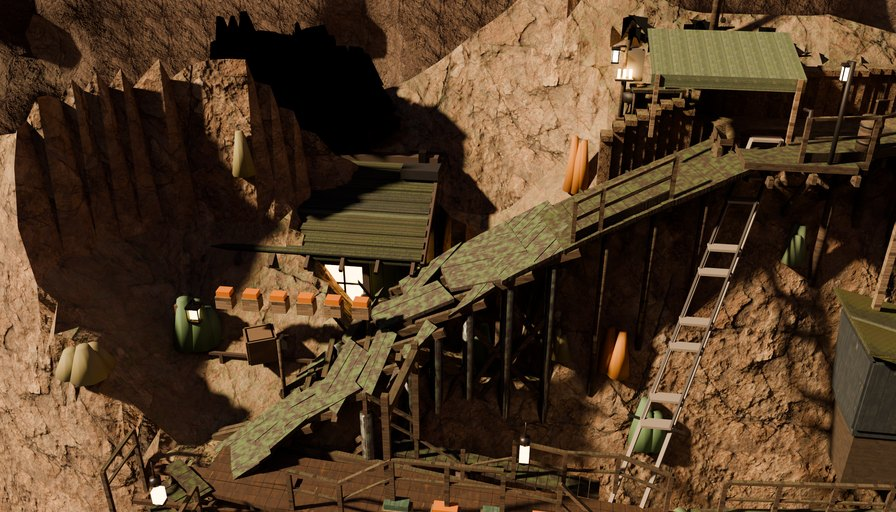
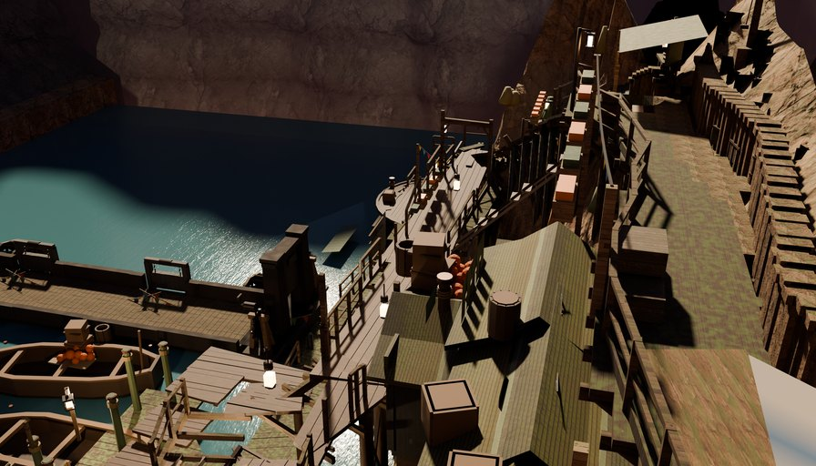
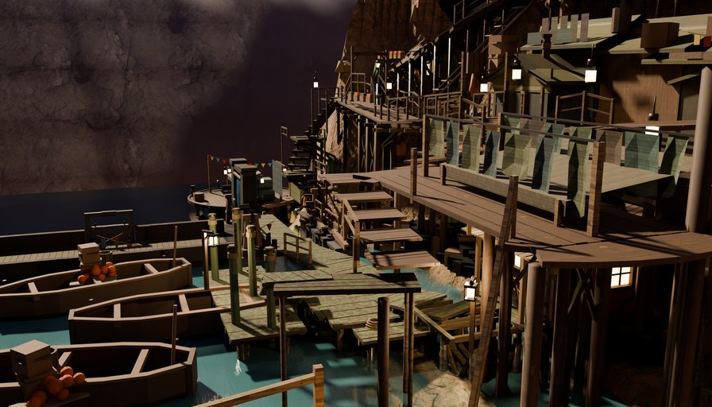
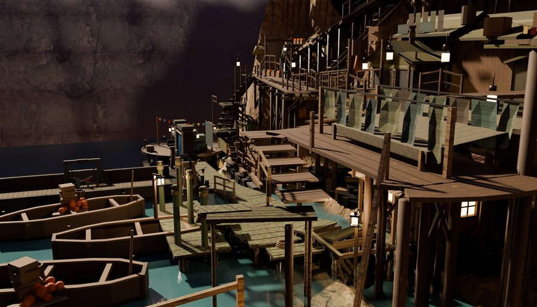
Round 5 named one item and five plates for round 6. The five plates were never one finding — the report deduplicates a checklist row under the first plate's wording. One of the five is refuted outright, two are a defect on the opposite side of the gorge that no round has touched, and the structural fix the item implies is refused with numbers. What ships is one number that moves both ends of the problem at once. Commits 6b78129e · e18f4fc7.
fx_haze_east is still a CURTAIN AT ONE X (a 6 m box at
x 124..130), so aerial perspective is keyed to a plane in the world rather than to
distance along the view. The judge's surviving frame-edge row has moved its subject to
the card's own edge: "dense cloud layer cuts off somewhat abruptly against cliff
geometry" on gate, shelf-east, weave, waterfront, north-landing — two of which nobody
has touched.findings.json, with each judge bbox put on the geometry by
dh_seam_census box (120-ray grid) and its dark pixels named by a marched
dh_pixel_census sample:
| plate | verdict | its own bbox | what is actually in the box | reading |
| gate | WEAK | u 0.00..0.47 v 0.00..0.38 | 86.5% cliff_east_closure, meeting cliff_town_d/a at u 0.456..0.468 | the handover's mechanism, and it is real |
| weave | WEAK | u 0.00..0.45 v 0.00..0.20 | 45.3% cliff_east_closure + 23.2% cliff_town_a/d; crushed sample 71.5% cliff_east_closure | mat_rock_gorgewall at 110–120 m | DARKNESS, not an edge — round 4's own named residual |
| shelf-east | WEAK | u 0.50..1.00 v 0.00..0.30 | cliff_far_toe 32.0% + cliff_far 27.5% + fx_far_town_base 20.0% + fx_ridge_upstream_mid 11.5% at 100–142 m | THE UPSTREAM FAR FIELD. Zero rays cross fx_haze_east |
| waterfront | FAILING | u 0.78..0.82 v 0.00..0.10 | 76.7% fx_ridge_upstream_mid at 109 m + 23.3% fx_far_town_base at 101 m | upstream again. Zero rays cross fx_haze_east |
| north-landing | FAILING | u 0.00..0.34 v 0.00..0.075 | 91.7% lf_ground at 19–30 m, box L p50 145.6; the crushed 4.9% is veg_lf_rimclump_23/13/28 | mat_leaf_autumn at 19–22 m, and no volume card is crossed by any ray | REFUTED — near-field foliage, not a far-field void |
mat_haze_east's density a node-driven world-Z ramp,
and from that moment dh_pixel_census — the tool written to measure that card —
reported it as density=driven with tau omitted: cover printed
a dash and the tau column printed 0.0000 for the one card in town whose tau was the whole
question. Fixed by recognising that exact chain (Geometry.Position → SeparateXYZ.Z →
MapRange) and integrating it at the segment midpoint, which is EXACT for a linear ramp.
tools/dh_pixel_census.py; --uv added so a judge's own
bbox can be sampled directly.fx_haze_east's far face from x = 130 to x = 140.5 (cliff_east_closure's
own front face), keep the near face where round 4's spill census measured it, and divide the
density ramp by the same 2.75. Optical depth through a full crossing is then unchanged to
the last digit (0.102 × 6.00 = 0.037091 × 16.50 = 0.612000).
depth.png), shipped → slab:
| plate | far p05 | far p50 | far crushed |
| gate | 14.7 → 7.6 | 47.7 → 46.2 | 12.8% → 15.3% |
| weave | 13.9 → 4.5 | 18.3 → 7.8 | 83.5% → 83.3% |
| lockfive | 17.3 → 6.1 | 37.1 → 38.0 | 25.8% → 26.6% |
cliff_town_a/_d standing inside the medium. The town wall's
measured luminance across the gate seam moved 81.0 → 79.5 / 67.8 → 65.6 / 43.7
→ 42.5 — nothing. Round 5's seam census gives the wall-side hits as x 103.9..134.1 and
the mass of that is nearer than x = 124: the medium was thickened past most of its own
subject. The gate step at v 0..0.10 did fall 71.5 → 38.2, but by killing the haze's
brightness rather than lifting the wall's — and the two bands below it got WORSE
(41.7 → 56.6, 26.5 → 34.2). --x1 is kept in the carrier as the
reproduction of that refusal.mat_haze_east anisotropy 0.30 → −0.25. Tau
untouched, scattering albedo untouched, geometry untouched: only the ANGULAR distribution of
scattered light changes. Two measured facts make it the right lever, and neither is a preference:
gate is the one camera that looks across the rake —
which is exactly why gate was the one plate that blew out white while the other four went
black. They are the two ends of ONE phase function, so one number moves both, in
opposite directions, correctly.
cycles.volume_bounces == 0. This bake does no multiple volume
scattering at all, and multiple scattering is precisely what makes real forward-scattering haze
bright in back-scatter. A negative g is the single-scatter stand-in for the bounces the render
does not pay for.| g | gate p05 / p50 / p95 | weave p05 / p50 | lockfive p05 / p50 | crossing p05 / p50 |
| +0.30 (shipped) | 14.7 / 47.7 / 166.0 | 13.9 / 18.3 | 17.3 / 37.1 | 8.0 / 38.5 |
| 0.00 | 17.2 / 51.8 / 144.6 | 17.1 / 24.4 | 22.8 / 41.6 | 10.2 / 42.8 |
| −0.25 | 18.0 / 55.0 / 137.1 | 17.5 / 27.5 | 25.0 / 44.3 | 11.7 / 45.7 |
| −0.50 | 17.8 / 59.2 / 136.3 | 17.1 / 30.0 | 25.8 / 47.1 | 11.3 / 49.7 |
fx_haze_mid (24 m) / fx_haze_far (24 m) /
fx_haze_rim (44 m) are ALREADY slabs at graded distance. Their defect is LEVEL: a
ray to the upstream far field at 100–140 m collected tau 0.086 + 0.024 against the east
closure's 0.612. Shipped rung ×3.5 / ×2.5, chosen because it is the one that
KEEPS THE LADDER MONOTONE IN DISTANCE — crosswise tau mid 0.286 < far 0.480 < rim
0.594. The next rung up (×5.0 / ×3.5) puts far at 0.672, PAST the
rim behind it, which is an inverted depth cue again: the very defect round 4 was fixing.
fx_haze_rim is untouched — 0 of 138,240 rays across all fifteen cameras cross
it, and raising something no camera can see is not a fix.
| far field (≥90 m) | shipped | ×2.0/×1.5 | ×3.5/×2.5 | ×5.0/×3.5 |
| shelf-east p05 / p50 / crushed | 1.0 / 11.4 / 64.4% | 2.3 / 12.4 / 60.2% | 3.6 / 13.5 / 56.2% | 4.9 / 14.3 / 54.6% |
| waterfront p05 / p50 / crushed | 17.8 / 71.2 / 22.9% | 33.1 / 80.2 / 0.0% | 50.5 / 91.4 / 0.0% | 64.6 / 100.7 / 0.0% |
| north-landing p05 / p50 / crushed | 2.3 / 31.9 / 27.4% | 3.6 / 40.7 / 25.8% | 4.9 / 46.3 / 24.2% | 6.0 / 50.3 / 24.0% |
| REST p50 (the near field, the confinement check): 104.1 → 104.0 · 112.4 → 112.4 · 99.3 → 99.0 | ||||
depth.png reconstructs to ≥ 90 m
from the eye (the upstream analogue of round 4's "world x ≥ 138" wall mask, and it works in
any direction). REST = everything nearer, the confinement check.
| plate | far% | far p05 | far p50 | far p95 | far crushed | REST p50 | far 5×5 sd |
| gate | 22.7% | 13.0 → 15.1 | 47.5 → 54.8 | 167.0 → 135.7 | 12.0% → 9.2% | 74.5 → 74.6 | 2.04 → 1.95 |
| weave | 8.5% | 13.6 → 17.4 | 18.3 → 27.6 | 46.7 → 55.0 | 85.6% → 8.6% | 45.8 → 45.7 | 0.52 → 0.56 |
| crossing | 12.8% | 7.8 → 11.6 | 38.2 → 45.5 | 50.7 → 56.9 | 19.4% → 13.9% | 41.2 → 44.3 | 1.53 → 1.37 |
| lockfive | 20.5% | 17.2 → 25.2 | 36.6 → 44.0 | 53.5 → 59.9 | 25.5% → 0.9% | 23.0 → 23.8 | 1.58 → 1.47 |
| shelf-east | 12.4% | 1.0 → 3.6 | 11.3 → 13.7 | 89.4 → 110.6 | 47.7% → 38.2% | 102.4 → 102.5 | 1.23 → 1.26 |
| waterfront | 1.7% | 17.6 → 50.3 | 67.8 → 87.8 | 98.5 → 112.6 | 21.9% → 0.0% | 111.8 → 111.8 | 3.08 → 2.50 |
| north-landing | 8.8% | 1.6 → 4.3 | 29.6 → 42.3 | 139.0 → 139.7 | 25.5% → 21.7% | 97.9 → 97.8 | 3.17 → 3.16 |
memory_pressure -Q read 88% free before every spawn and
no second Blender ran at any point; the user was at the machine.depth.png is byte-identical against git HEAD on six of the
seven plates (cine_bake deletes every haze/fog/smoke object before the depth
pass, so it cannot move). shelf-east differs on 25 pixels of 1,032,192 (0.0024%), maximum
1 LSB of the packed 24-bit depth — round-off, not geometry, and the reason it moved at all
is worth keeping: shelf-east's last bake was 2026-08-06, i.e. BEFORE round 5 moved the town
wall. A plate refused on the BEAUTY frame keeps its OLD DEPTH MAP, and those are different
artifacts. And del-cine/scene.glb came out of this bake unmodified in git,
which is the collision receipt: no geometry moved, so no bundle is owed and
town_export is not implicated.cine_test 635 ok / 1 failed / 2 soft warnings — the
PRE-ATTRIBUTED deep-stairs↔waterfront seam red, same
{"fired":0,"expected":10} signature, i.e. the Dellhollow baseline exactly ·
slice_test 776/0 · findability_test 69/0, 11
warnings · routes_derive --check clean, 15 shots. Identical to round 5's
receipt in every figure.scene_redteam --mode both, pinned gemini-3.6-flash, 42 calls,
0 errors, run-20260808-round6phase, on the seven rebaked plates, against round 5's
run-20260808-170205-calib. THE CLAIM UNDER TEST: does the frame-edge row clear on
the five plates round 5 named?
| plate | round 5 | round 6 | and what its subject is now |
| waterfront | FAILING | CONVINCING | CLEARED — "extend naturally to all four frame edges" |
| north-landing | FAILING | CONVINCING | CLEARED — "extend seamlessly to every edge" |
| gate | WEAK | WEAK | subject moved OFF the haze edge: "distant cliff faces LACK DETAIL and fade into simple background haze" — round 4's own named veining residual, now the loudest thing in that box |
| shelf-east | WEAK | WEAK | subject moved off "flat and dark" onto "simplified and UNTEXTURED", and its bbox moved from u 0.50..1.00 v 0.00..0.30 to u 0.00..0.26 v 0.50..0.99 — a different part of the frame |
| weave | WEAK | FAILING | subject moved to u 0.00..0.04, v 0.39..0.52 — 47.0% water_pool-downstream | m_water at 81–97 m. The "plain blue void" is the WATER SURFACE |
| lockfive | CONVINCING | FAILING | u 0.00..0.26, v 0.44..0.58 — 66.0% m_water at 57–79 m + 15.6% mat_blackstone spill bays at 36 m. Water again |
| crossing | CONVINCING | FAILING | u 0.92..1.00, v 0.76..1.00 — the untextured white wedge, PRE-EXISTING (filed twice by run-20260806-1, before any haze round) |
fx_ridge_upstream / _mid / fx_ridge_far_west wear
mat_rock_far and fx_far_town_base / _silhouette wear
mat_silhouette; the lift put 38.2% (was 47.7%) of shelf-east's far field above the
crush floor and the judge immediately called it "simplified and untextured". Lifting a black
shape reveals what shape it is. (2) THE FRAME-EDGE QUESTION HAS MOVED ONTO
m_water on weave and lockfive — 47% and 66% of those boxes, at 57–97 m, read
as a "plain blue void" / "flat dark void". Dellhollow's water at distance is the next subject,
and it is the class Emberbrook's own water lane already has instruments for.cine_bake --draft --res 1008x576 --samples 28,
15 frames in 3.8 min), % of frame changed above 4/255 and above 12/255, against the ratified
0.010% / 0.000% noise floor:
| rebaked | >4/255 | >12/255 | refused with a number | >4/255 | >12/255 |
| lockfive | 20.336% | 3.654% | cottage | 0.133% | 0.002% |
| gate | 16.230% | 8.580% | boatyard | 0.076% | 0.007% |
| crossing | 15.572% | 2.284% | shelf-west | 0.062% | 0.002% |
| weave | 7.807% | 2.758% | lockhead | 0.056% | 0.001% |
| shelf-east | 6.955% | 5.283% | quay-west | 0.049% | 0.002% |
| north-landing | 4.024% | 2.219% | loop-stairs | 0.041% | 0.002% |
| waterfront | 2.063% | 1.711% | deep-stairs | 0.039% | 0.002% |
| fishdock | 0.035% | 0.000% |
lockhead and loop-stairs carry round 5's t3_rock_projection
repair in the MASTER and not on any plate; both are refused here at 0.056% / 0.041%, so
this round does not ship it and it is still owed.Left: before7/ (extracted from git HEAD, i.e. the round-5 plates). Right: live.
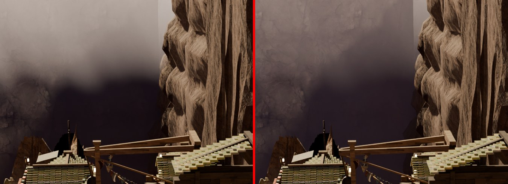
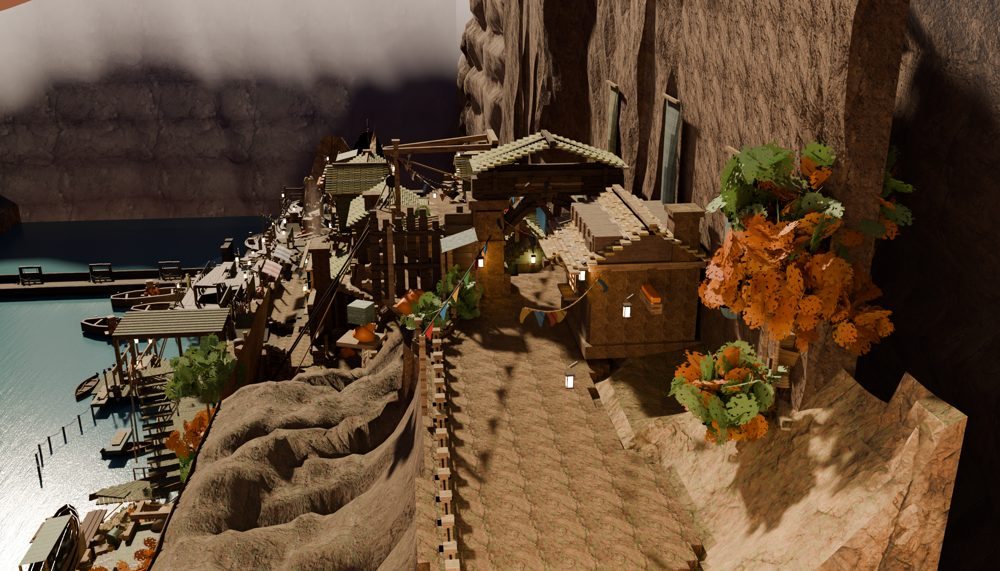
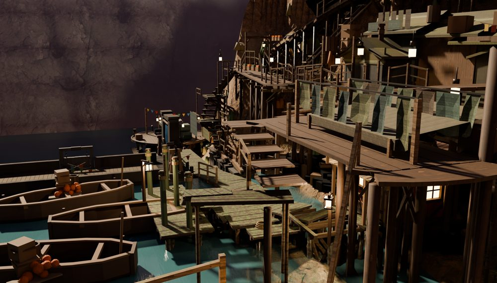
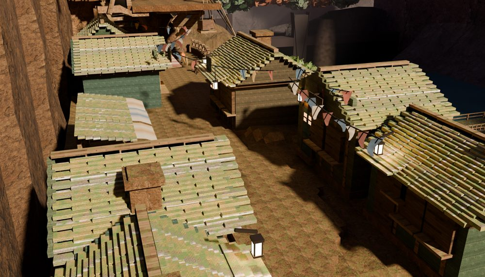
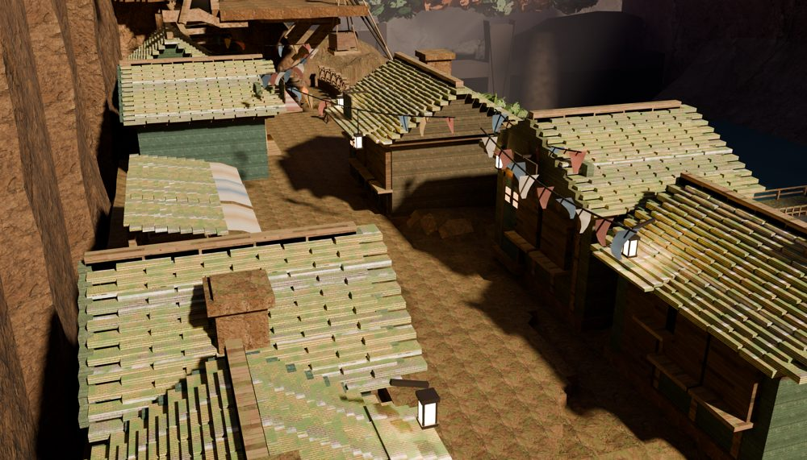
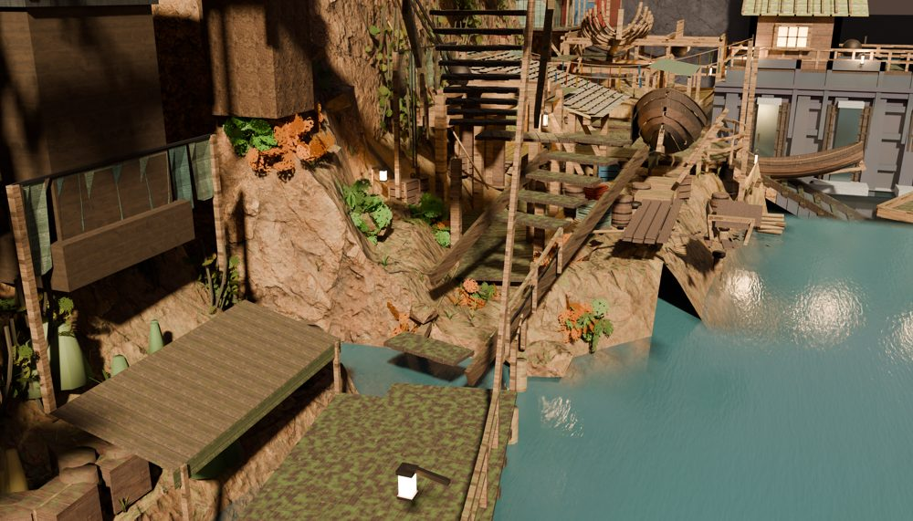
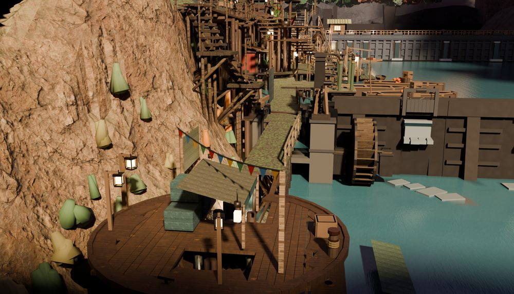
Round 6 named TWO items for round 7. One is REFUTED at the judge's own box; the
round is spent on the other. Instruments: tools/dh_haze_pool.py
(census + reflect), tools/dh_pixel_census.py,
tools/plate_probe.py. Judge run
docs/qa/redteam/run-20260808-round7water.
mat_rock_far / mat_silhouette; gate's finding moved to
"distant cliff faces lack detail", shelf-east's to "simplified and untextured", shelf-east
measured at 5.80% of frame.run-20260808-round6phase/findings.json
put on the geometry by a marched ray census (grid 240x135, all fifteen cameras):
| plate / row | bbox | % of frame | what is actually in it |
| gate frame-edge WEAK | u 0.00–0.47 v 0.00–0.40 | 18.78% | 83.2% cliff_east_closure | mat_rock_gorgewall at 168 m — a TEXTURED rock. 2.3% water. This is round 4's own named veining residual, not a placeholder. |
| shelf-east frame-edge WEAK | u 0.00–0.26 v 0.50–0.99 | 12.71% | 42.1% shelf_cliffface + 45.6% shelf_home_b/_c roof shingle AT 8–14 m — NEAR-FIELD HOUSING. Distance p50 11 m. |
| weave frame-edge FAILING | u 0.00–0.04 v 0.39–0.52 | 0.52% | 54.9% water_pool-downstream | m_water at 90 m |
| lockfive frame-edge FAILING | u 0.00–0.26 v 0.44–0.58 | 3.63% | 64.1% m_water at 69 m |
| crossing frame-edge FAILING | u 0.92–1.00 v 0.76–1.00 | 2.05% | 65.1% qm_awning_0 | mat_qm_awning AT 5.3 m — the "untextured white wedge at the edge of the world" is a MARKET AWNING in the near field. Pre-existing (filed twice by run-20260806-1). |
mat_rock_far/mat_silhouette are worn by fx_ridge_upstream(_mid),
fx_ridge_far_west, fx_far_town_base/_silhouette and own
5.52% of shelf-east (L p50 53.8, 5x5 sd 0.32, 126 m), 2.99% of north-landing and
1.81% of waterfront — genuinely flat and untextured, and 0.00% of the other twelve cameras.
But shelf-east's round-6 box is the bottom-left corner at 8–14 m, and north-landing and
waterfront both CLEARED to CONVINCING in round 6. The judge's WORDS on shelf-east say
"background rock and sky ... at upper margins" while its BOX is near-field roofs:
quality:frame-edge-world is the one row aimOf is deliberately not
allowed to gate, so nothing caught it. Named for a later round on the MEASUREMENT, never on
that verdict.quality:water-read row is
CONVINCING. Water is visible on 10 of 15 cameras (1.2%–28.5% of frame); it is only the FAR
water that is dark:
| plate | <30 m | 30–60 m | 60–100 m | >100 m |
| crossing | 0.24% L204 | 6.11% L97 | 10.44% L17.9 sd0.66 | — |
| lockfive | 6.71% L45 | 0.44% L59 | 2.49% L24.2 sd0.82 | — |
| weave | — | 4.56% L54 | 0.86% L15.9 sd1.25 | — |
| gate | — | — | 4.23% L160 | 3.05% L21.8 sd1.60 |
m_water HAS the ratified depth→alpha bake
(t2_depth_attr → t2_depth_ramp → Alpha on both lobes) and it is
intact — the round-3 defect has not come back. What the sheet is doing is REFLECTING:
Roughness 0.09 is a near-mirror and at grazing incidence Fresnel is ~1, so the pixel shows
whatever is in the mirror direction. dh_haze_pool reflect mirrors every water-hit
view ray about the sheet's own up normal and marches again:
| band | sunlit | reflects | plate L |
| crossing <30 m | 0% | <sky bg> 94% | 204 |
| crossing 30–60 m | 55% | cliff_east_closure 53% | 97 |
| crossing 60–100 m | 96% | cliff_east_closure 65% | 18 |
| lockfive 60–100 m | 81% | cliff_east_closure 100% | 24 |
| weave 60–100 m | 23% | cliff_east_closure 77% | 16 |
KEY_gorgewall.
That is round 4's inverted depth cue arriving on the water by reflection, and it is why the
judge's word for it is "void".| variant | crossing p05 / p50 / p95 | lockfive p05 / p50 / crushed% |
| shipped, Roughness 0.09 | 10.0 / 18.2 / 113.9 | 18.6 / 24.9 / 34.1 |
| Roughness 0.22 | 10.3 / 18.1 / 140.4 | 19.4 / 23.7 / 50.5 |
| Roughness 0.35 | 10.4 / 17.6 / 176.2 | 18.1 / 21.1 / 78.0 |
| ripple_bump 0.26 → 0.60 | 10.4 / 18.7 / 190.8 | 19.6 / 24.9 / 35.6 |
fx_haze_east 124–130, _mid −47..−23, _far −74..−50,
_rim −122..−78) or a 2.7 m skin along the south bank (fx_haze_south
y −2.4..0.3). A ray to the far water runs ALONG the gorge floor and reaches its target before any
curtain; the ray to the wall behind it crosses one.Fix class: ATMOSPHERE (no light added, moved or re-energised; no exposure, view
transform or tone curve touched; no geometry a player can stand on). fx_haze_pool —
a LOW SLAB lying over the downstream pool, x 96..124 (its far face IS
fx_haze_east's near face, abutting so no ray is taxed twice), y 8..86,
z −9..−3 (0.8 m above the pool surface), density 0.05, anisotropy −0.25 —
round 6's own constant, for round 6's own reason: these cameras look WITH the sun and
volume_bounces == 0.
fx_haze_east west: round 6 already refused
that with numbers (a medium moved against a wall moves into its shadow; and
north-landing's eye is 2.88 m in front of that card's near face). This card is a
different shape in a different place, and its whole design problem is still
north-landing — which looks straight down the gorge from x = 121 and would have
its entire frame milked by a slab that reached its sight line. Both bounds are therefore derived,
not chosen: the first shape tried (z top −0.5, x from 88) put 40.8% of north-landing's frame
inside the card with 27.8% SPILL onto its near piers and planking. Shape sweep, by census:
| shape | crossing card% / spill% | lockfive | north-landing card% / SPILL% |
| x 88..124, z top −0.5 | 17.71 / 2.86 | 5.20 / 2.57 | 40.76 / 27.75 |
| x 96..124, z top −0.5 | 17.62 / 2.84 | 5.12 / 2.50 | 36.18 / 23.33 |
| x 96..124, z top −2.0 | 15.20 / 0.63 | 3.38 / 0.76 | 14.90 / 3.31 |
| x 96..124, z top −3.0 (shipped) | 13.97 / 0.35 | 2.44 / 0.01 | 10.39 / 1.09 |
visible_shadow = False; and NO SOLVED CAMERA LIES INSIDE IT (nearest eye
north-landing, 9.32 m outside the box).| density | crossing p05 / p50 / crushed% | lockfive p05 / crushed% | gate crushed% |
| 0 (shipped) | 9.8 / 18.2 / 65.5 | 18.6 / 34.1 | 20.9 |
| 0.02 | 16.0 / 23.8 / 49.2 | 22.4 / 3.9 | 10.4 |
| 0.05 | 18.5 / 27.6 / 26.1 | 21.5 / 6.2 | 6.9 |
| 0.09 | 17.8 / 28.6 / 29.4 | 19.4 / 12.5 | 7.8 |
Every surviving box put back on the geometry with dh_objmap box, and
every one cross-checked against whether those pixels MOVED — because three of the four apparent
regressions are on pixels this change did not touch.
| plate / row | r6 → r7 | measured |
| weave frame-edge | FAILING → FAILING | THE WATER SUBJECT CLEARED. The box moved u 0.00–0.04 v 0.39–0.52 → u 0.00–0.23 v 0.00–0.45 and its composition went 54.9% m_water → 2.0%; what holds it now is 74.2% cliff_east_closure at 114 m — round 4's veining residual, gate's subject, a different finding under the same label. |
| lockfive frame-edge | FAILING → FAILING | NOT CLEARED — and the box got measurably better underneath the label. Same box (u 0.00–0.27 v 0.45–0.56), still 74.0% m_water at 70 m, but crushed 33.7% → 5.8% and L p50 24.9 → 28.0. The judge's own noun moved to a void "above the water line". |
| north-landing frame-edge | CONVINCING → FAILING | REFUTED — and it is the finding ROUND 6 ALREADY REFUTED, re-filed on the same objects. u 0.00–0.20 v 0.00–0.05, 0.89% of frame: 79.5% lf_ground | mat_rock at 22 m, L p50 151, with the dark part veg_lf_rimclump_23/13/28 | mat_leaf_autumn at 20 m. Near-field foliage at the TOP of the frame; the new card lies at z −9..−3 over the water and zero of those rays cross it (its north-landing rays are 9.29% water + 1.09% spill onto t2c_N5_nl_barge_deck/lf_piles). Not caused by this change. |
| gate water-read | CONVINCING → WEAK | ON PIXELS THAT DID NOT MOVE. The box is 31.2% water_pool-mid at 84 m, and gate's water at 55–100 m reads 160.2 before and 160.2 after — the card's top is z −3.0 and the mid pool's surface is z +0.2, so it cannot reach it. Only its 12.8% downstream sliver at 146 m moved (21.6 → 27.4). The complaint itself is a different axis: "shoreline contact transitions appear stiff". |
| weave water-read | CONVINCING → WEAK | ON PIXELS THAT DID NOT MOVE. The box is 26.1% water_pool-mid at 41 m; weave's water under 55 m reads 53.8 before and 53.8 after. |
| crossing frame-edge | FAILING → FAILING | Unchanged and PRE-EXISTING: 64.4% qm_awning_0 | mat_qm_awning at 5.3 m. The "edge of the world" is a market awning in the near field; filed twice by run-20260806-1 before any haze round. |
| crossing / lockfive / north-landing water-read | CONVINCING → CONVINCING | Held. lockfive's now reads "translucency near shores, smooth caustics, clean contact boundaries". |
m_water); the other kept its label
while its crushed fraction fell 5.8x (lockfive, 33.7% → 5.8%). The three verdicts that got
WORSE are measurably not about this change: two are on water whose luminance is identical to the
last digit before and after, and the third is a re-filing of a finding round 6 refuted on the same
objects at the same distance. At this judge's documented 2/5 exact recall, a verdict that moves
on unmoved pixels is the noise floor showing — which is why the box goes on the geometry before
the sentence goes in a handover.Left: before8/ (extracted from git HEAD, i.e. the round-6 plates). Right: live.
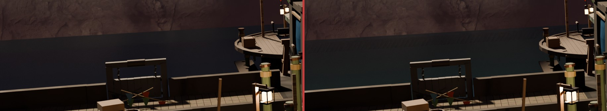
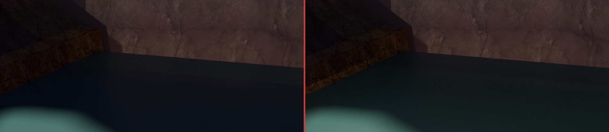
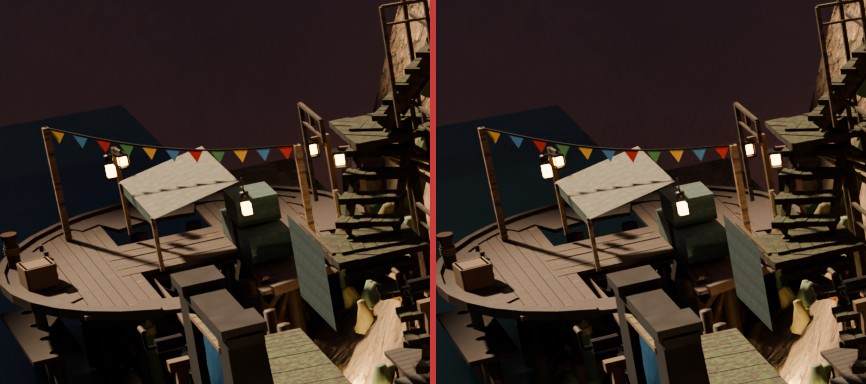
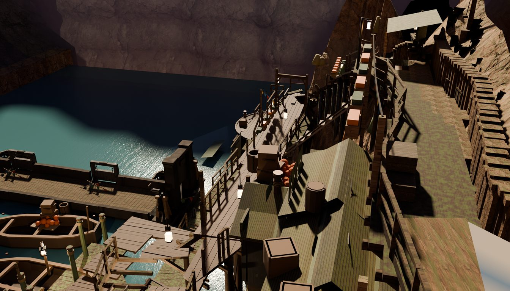
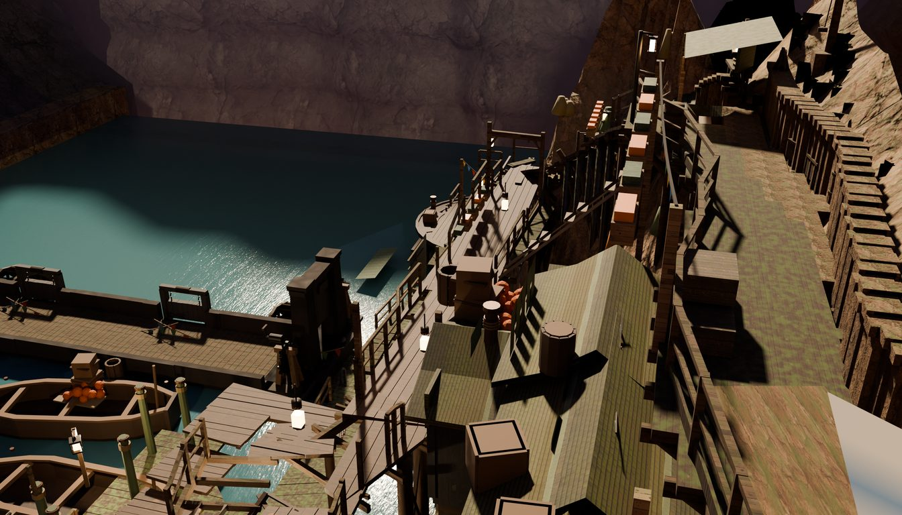
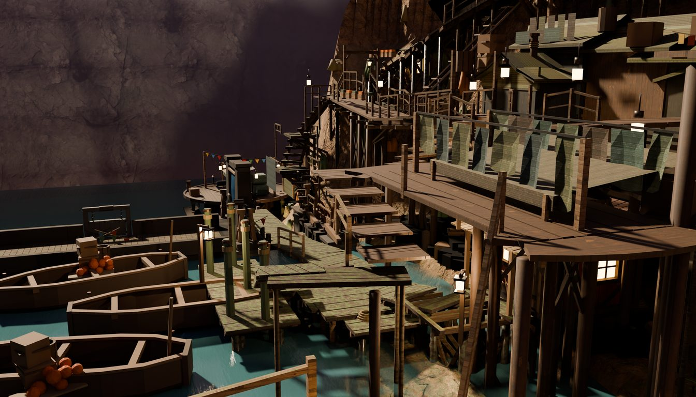
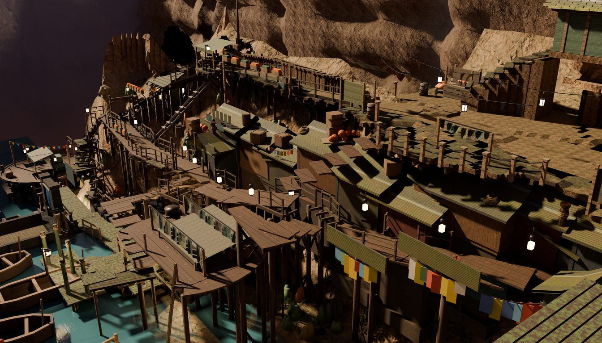
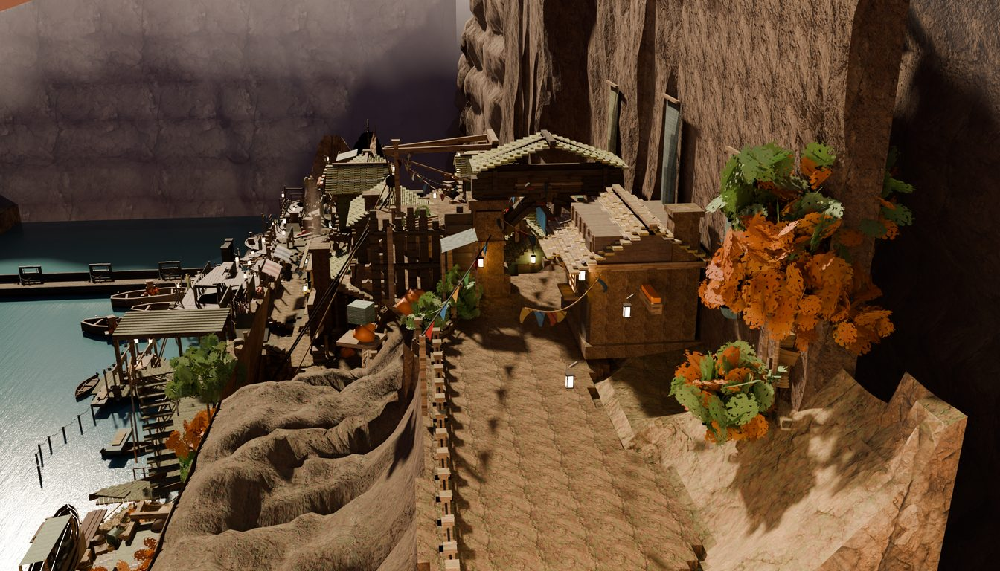
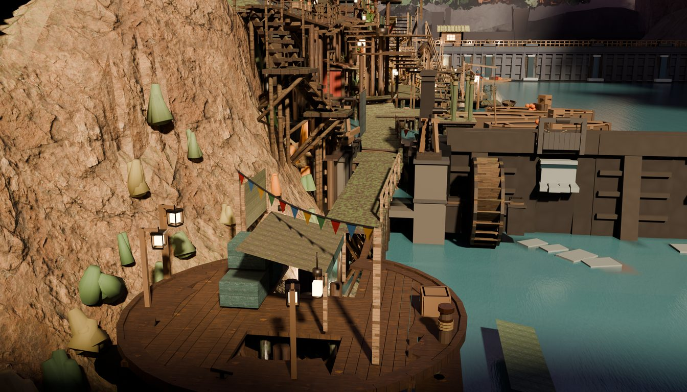
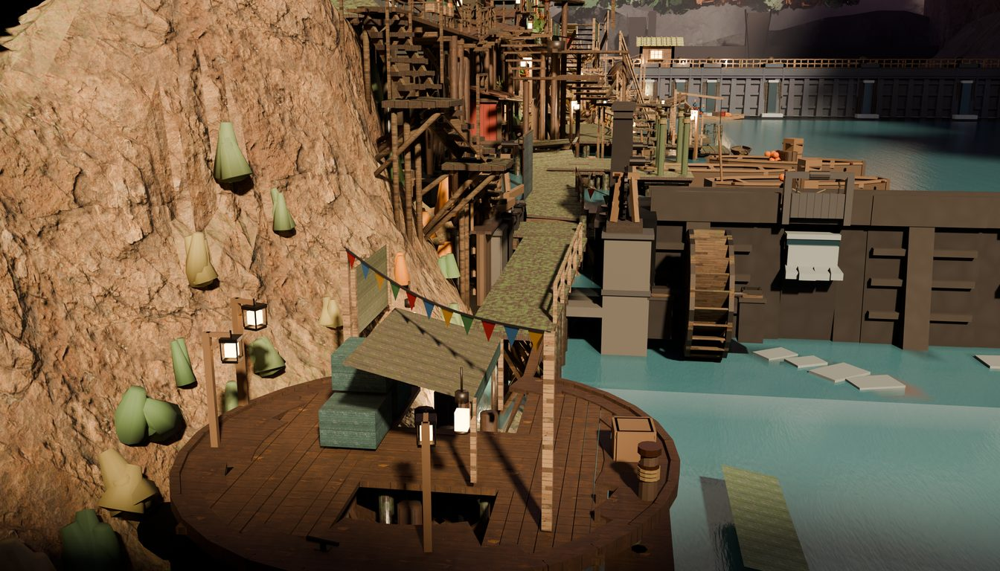
t3_rock_projection repair” never existed — a three-round debt, refuted with no bakeRounds 5, 6 and 7 each closed owing a deliberate rebake of lockhead and loop-stairs, on the claim that they carried round 5’s texture repair “in the MASTER and on no plate”. The lane sent to ship it measured the premise first. The premise is false: both plates already carry the repair.
The defect is one material’s Mapping node — mat_rock_townwall rotation 90° / scale 1.05
(t2_cliff_south.derive_material) against rotation 0 / scale 0.55 (t3_rock_projection,
shipped ec95c8d6, 2026-08-01). A plate can only carry the defect if the master it was baked from carried it.
dellhollow-master.blend revisions from ec95c8d6 to HEAD: rotation (0,0,0), scale 0.55.
Every one. Swept in ONE Blender launch, re-opening each extracted revision with bpy.ops.wm.open_mainfile. No render.So round 5’s 15.299% / 13.490% was its OWN transient regression, measured against a control that was already repaired — and “0.004% / 0.009% after the generator fix” means the master was returned to the state the shipped plates were already baked from. Round 5 wrote a true sentence about its own build; rounds 6 and 7 inherited it as a claim about the shipped bundle. A claim about an artifact’s state must be re-derived from the artifact, not inherited through handovers — an owed item that never gets tested is indistinguishable from a real one.
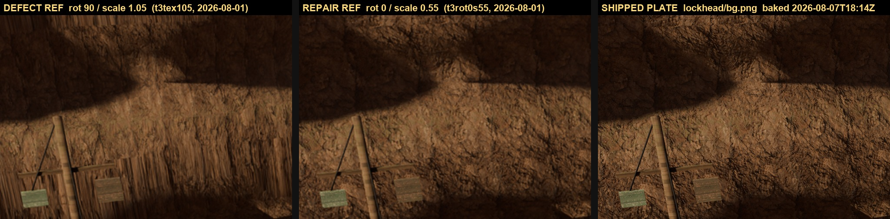
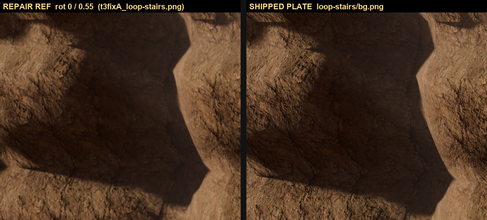
t3fixA_loop-stairs: the same scalloped columns, the same mottle, zero vertical fibres.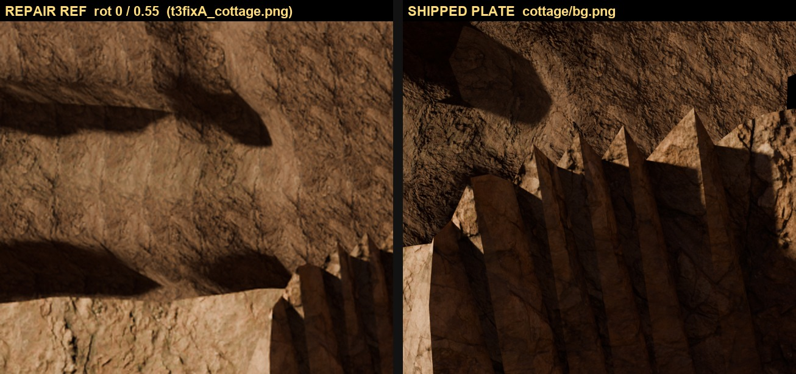
Three inherited targets, each taken as a hypothesis. One refutes on value and is
not built; the other two are one district and one carrier. Instruments:
tools/dh_objmap.py (one 486,000-ray Blender pass, every later question offline),
the shipped plates, and a whole-town draft A/B. Carrier tools/qm_awning_relief.py;
the builder tools/qm_build.py carries the same three edits so a rebuild agrees.
mat_rock_far / mat_silhouette own 5.52% of shelf-east at 5×5
sd 0.32 — flat, untextured placeholder. Worth dressing?The share reproduces to two decimals across all fifteen cameras (ray census against the current master): shelf-east 5.51%, north-landing 2.99%, waterfront 1.80%, 0.00% on the other twelve — a town-wide mean of 0.687% of frame.
THE NUMBER THAT DECIDES IT IS A CONTROL, NOT THE SUBJECT. Dressing can only buy the local contrast the atmosphere still lets through at that range, so the greybox was measured against the textured surfaces in the SAME frame at the SAME distance:
| shot | subject | px | dist p50 | L p05 / p50 / p95 | local 5×5 sd |
| shelf-east | greybox | 227,666 | 126 m | 1.4 / 54.5 / 116.5 | 0.55 |
| shelf-east | CONTROL — textured, >100 m | 264,822 | 117 m | 6.3 / 11.5 / 94.2 | 1.08 |
| north-landing | greybox | 123,446 | 174 m | 3.6 / 53.5 / 129.7 | 0.79 |
| north-landing | CONTROL — textured, >100 m | 216,007 | 109 m | 5.6 / 28.3 / 146.8 | 2.30 |
A texture on this geometry can buy at most half of one 8-bit level at shelf-east
(0.55 → 1.08), because rounds 4, 6 and 7 already put aerial perspective in front of it and
haze is what eats texture. Against that: 3 of 15 cameras, 0.687% of the town's pixels, and
ZERO judge verdicts in four consecutive runs (170205-calib at n=3 both modes / 71 calls,
round4haze, round6phase, round7water) — while the crossing corner below was filed
eleven times in the same four runs. Looked at, at native resolution, it reads as distant
mist-shrouded mass; what is actually ugly there is a hard rectangular silhouette
(fx_far_town_base is a box), which is a SHAPE question and not the dressing
question that was handed over. Not built. Round 9 should not inherit “dress the far
field” without re-deriving this control.
Put on the geometry, the box is 62.5% qm_awning_0 | mat_qm_awning at 5.3 m
(then paving 16.2%, lk_bankface 18.6%). It is a stall awning in the near field —
not missing geometry, and not the far field.
| crossing subject | px | dist p50 | L p50 | local 5×5 sd |
| qm_awning_0 (THE WEDGE) | 56,827 | 5.3 m | 168.8 | 0.60 |
| everything else at 3–12 m | 432,589 | 10.6 m | 85.0 | 4.11 |
| … its brightest third | 92,507 | 10.4 m | 125.8 | 5.05 |
The second brightest large object in the plate and 6.9× flatter than the near field it sits in. So “white” and “untextured” are both true as numbers.
AND THE STRIPES WERE NEVER THE ANSWER, BECAUSE THEY ARE OFF THE EDGE OF THE FRAME.
awning() bakes stripes into vertex colours (the glTF-survival gate forbids a
procedural). Projecting qm_awning_0's 21 vertices through crossing's own solved
camera: every dark column (v00/v06/v12, colour 0.068,0.123,0.191) lands at
v > 0.93, below the frame; the in-frame corner is columns 5 and 6, both the
cream 0.320,0.295,0.248. A PATTERN OFF THE EDGE OF THE FRAME IS NOT A PATTERN —
which is why four rounds of colour work could never have answered this verdict.
THE MECHANISM, AND IT IS THE LEVER. The canvas is a RULED SURFACE: three vertex rows, z constant in x. Its normal does not vary along its own width, so no light can print anything on it at any crop. Same class as round 3's town-wide water finding (“the sheets are flat to a hundredth of a degree, so there are no ripple normals for any light to catch”).
FIX (class: GEOMETRY). qm_awning_relief.py relief — every awning
rebuilt at 2n+1 columns: the old columns become RIBS AND RISE, the new midpoints sit
exactly on the old ruled surface. NO VERTEX EVER MOVES DOWN, asserted per row per
awning, because this canvas hangs 0.19 m over a 2.05 m corridor and AWN_CLEAR
exists because a 50 mm margin is not a margin — the headroom awning_lip and
over_walk cleared is arithmetically untouched rather than re-tested. The wall row is
pinned (a canvas is nailed to a straight batten); mid and lip scallop, so the lip's straight
silhouette breaks too. Sag 0.110 m at the lip / 0.073 at mid over ribs 0.42 m apart =
19° of peak cross-slope.
AND ONE MONOCHROME CANVAS, FOUND ON THE WAY (class: material, as vertex data).
STALLC[3] is bit-identical to the hard-coded second stripe colour
stall() passes every awning, so qm_awning_1 shipped
21/21 vertices at one colour — the only truly monochrome awning in town, and
invisible to every instrument here because they report MATERIALS and a stripe is vertex data.
awning() now refuses rgb_a == rgb_b.
qm_stall_3's “placeholder plane”: round 3 named the cause and nobody built the fix, and it is all seven boardsRound 3 already refuted the words (the board wears mat_wallwood's planks at
5×5 sd 6.15 — not flat, not untextured) and named the real defect as structural:
stall() puts the backboard at cy - sgn*(hy - 0.20), spanning
hy−0.25…hy−0.15, while the four posts at ±(hy - 0.12) span
hy−0.175…hy−0.065. The 1.30 m painted panel stands 0.185 m PROUD of
its own frame on the plaza side, so the square sees an unbroken face with nothing holding it
up. The defect is in stall(), so it is all seven boards, not the one the judge
happened to be looking at — frame share qm_stall_*: quay-west 0.43%,
deep-stairs 0.14%.
FIX (class: GEOMETRY). Board offset 0.20 → 0.015, i.e. each board moves back 0.185 m until its plaza face is flush with its own posts' back face. Nothing moves toward the plaza. Carrier and builder produce the same number and the carrier derives it from the posts it finds rather than from the constant, so it cannot silently disagree.
| shot | >4/255 % | >12/255 % |
| quay-west | 3.026 | 1.781 |
| loop-stairs | 1.607 | 1.075 |
| deep-stairs | 1.380 | 0.730 |
| crossing | 1.318 | 1.079 |
| lockhead | 1.070 | 0.694 |
| weave | 0.801 | 0.513 |
| gate | 0.276 | 0.184 |
REFUSED WITH A NUMBER, all ≤0.015% above 4/255 and ≤0.001% above 12/255: shelf-west 0.015, shelf-east 0.013, waterfront 0.011, boatyard 0.010, fishdock 0.009, lockfive 0.004, north-landing 0.004, cottage 0.001. Eight plates keep their existing bytes.
The mask is the BEFORE geometry's objmap, so it is one set of pixel indices and both renders are read through it; a mask recomputed per plate moves exactly when you are measuring.
| shot | subject | %frame | L p05 | L p50 | L>150 |
| crossing | the canvas | 1.38 | 118.1 → 97.3 | 168.8 → 158.2 | 73.2% → 56.8% |
| gate | the canvas | 0.07 | 13.6 → 13.5 | 159.7 → 108.3 | 61.3% → 12.5% |
| quay-west | the boards | 2.89 | 4.7 → 5.6 | 82.5 → 83.0 | 1.2% → 1.8% |
| crossing | REST of the frame | 98.53 | 2.8 → 2.8 | 44.8 → 44.8 | 7.5% → 7.6% |
| gate | REST of the frame | 99.79 | 7.2 → 7.2 | 67.6 → 67.6 | 7.9% → 7.9% |
CONFINEMENT HOLDS: the REST of every one of the seven frames moves by ≤1.3 of one 8-bit level (largest is quay-west 52.4 → 51.1, where the boards' own shadows moved).
AND READ IT AT THE FOLD'S OWN SCALE. The facets are 0.21 m wide, so a 5×5 window sits inside one and reports almost nothing (crossing sd5 0.60 → 0.73). Median per-block std at the scale the relief actually works at:
| shot | block 8 px | block 25 px | block 64 px |
| crossing before | 0.83 | 2.44 | 6.70 |
| crossing after | 1.13 | 9.33 | 16.64 |
| gate before | 13.01 | 53.00 | — |
| gate after | 24.52 | 38.76 | — |
A note paid for inside this round: the obvious implementation of that table —
sliding_window_view(...).std() at a 61 px window over a 2688×1536 plate —
reached 7.6 GB RSS and was still growing and had to be killed. A windowed view is
materialised by the reduction. Block-reduce, or crop to the region first.
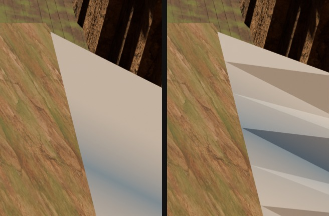
qm_awning_0 at 5.3 m. Before: one featureless pale plane. After: folded panels with real light and shade, and a scalloped edge against the deck.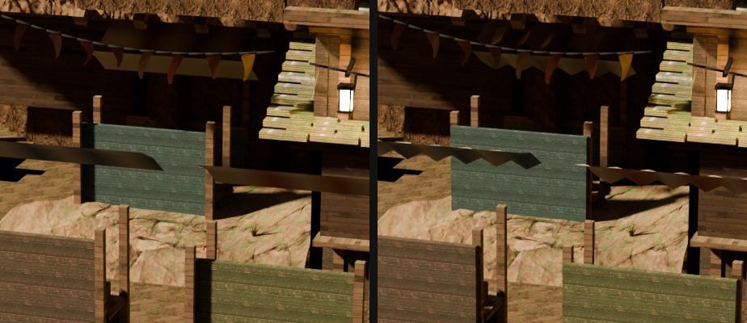
PARTIALLY MOVED, AND THE HONEST WAY TO SAY IT IS THE LANGUAGE COUNT. At the same box (u ≥ 0.85, crossing) across five runs:
| run | naive hits | “clips / cuts into the terrain / missing geometry” |
| 170205-calib | 3 | 1 |
| round4haze | 3 | 2 |
| round6phase | 2 | 2 |
| round7water | 3 | 2 |
| round8awning | 2 | 0 |
THE “HOLE IN THE WORLD” READING IS GONE — zero mentions of clipping through terrain or missing geometry, against two in each of the previous three runs — and so are the nouns “plane”, “polygon”, “triangle”, “wedge” and the adjective “flat”; round 8 says “mesh” twice. What survives is “untextured” and “white”: 2 of 3 naive passes still file it. 3/3 → 2/3 at N=3 is inside this judge's noise and is NOT claimed as a clear.
SO THE RESIDUAL IS NAMED AND IT IS A DIFFERENT LEVER: VALUE. The canvas is still the brightest thing in that corner (L 158.2 against the near field's 85.0) because its albedo is the cream 0.320,0.295,0.248. That is a one-number MATERIAL change and it was deliberately not pulled this round — the mechanism named relief, relief is what was built, and mixing the two would have made neither measurable. Round 9's item.
The board fix has NO judge receipt in either direction: no placeholder/flat-board language
appears at quay-west in any of the five committed findings.json sets, so its verdict
is the PICTURE and the geometry, not the judge.
cine_test 635 ok / 1 failed / 2 soft warnings — the
pre-attributed deep-stairs↔waterfront seam red, same {"fired":0,"expected":10}
signature, i.e. the Dellhollow baseline EXACTLY, and bundle parity (walk = 275 both sides) is
inside those 635 · slice_test 776/0 ·
findability_test 69/0 with 11 warnings ·
routes_derive --check clean, 15 shots (re-derived: the bundle moving made it STALE).
Both bundles re-exported in this window — cine_bake writes the collision GLB
only under --glb (GLB_ONLY, cine_bake.py:673); a --cams
beauty run does NOT refresh it, and nothing in the run says so.
Instrument note, banked: findability_test finishes its work in
seconds and then does not exit. Piped through | tail its result is invisible
until the process is killed — two runs looked like 11-minute hangs and were completed gates
sitting in a pipe.